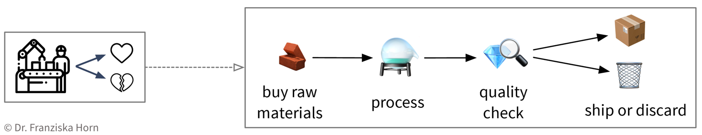
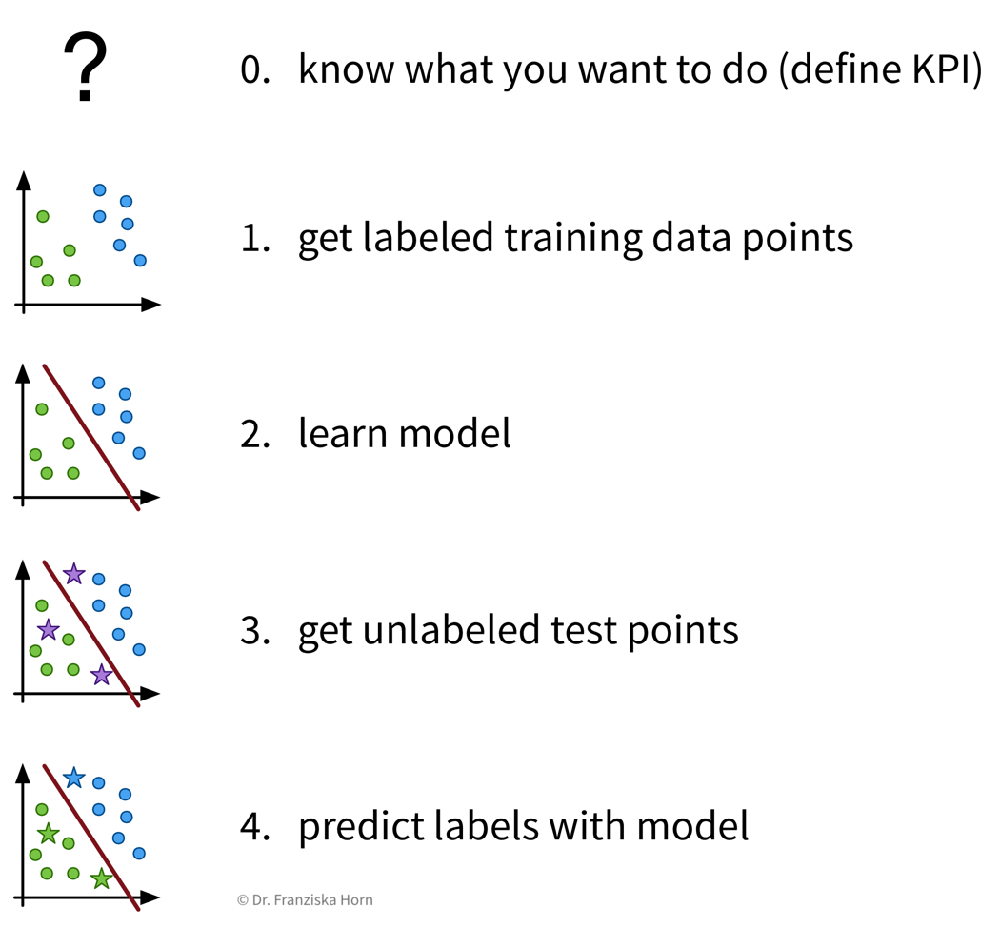
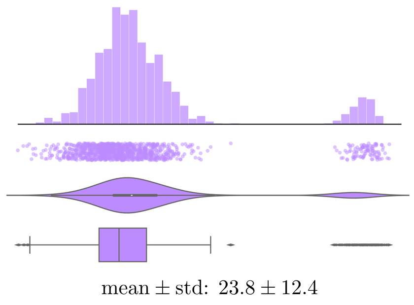
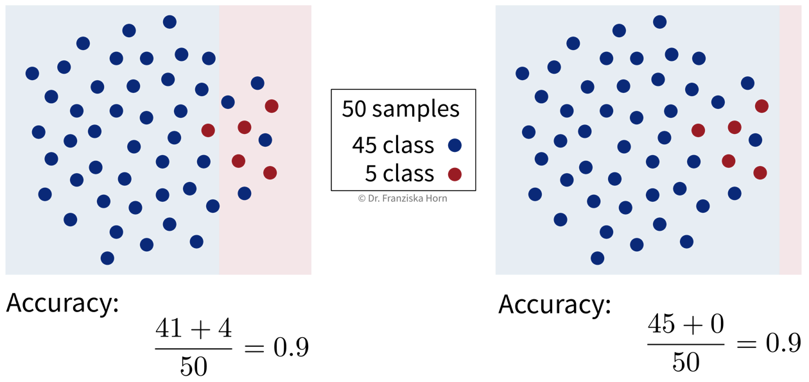
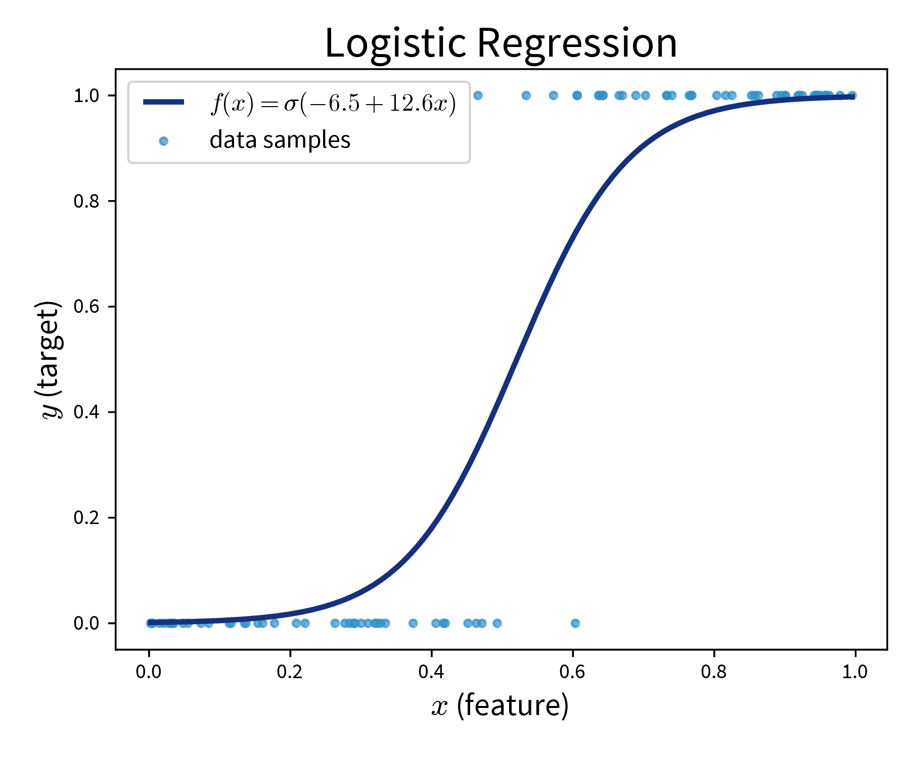
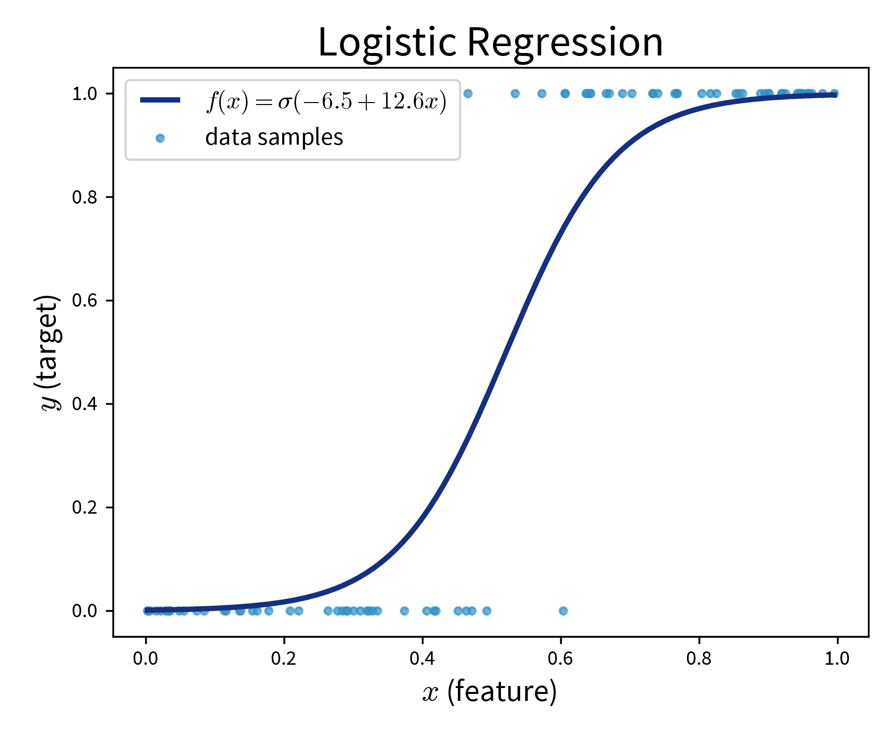
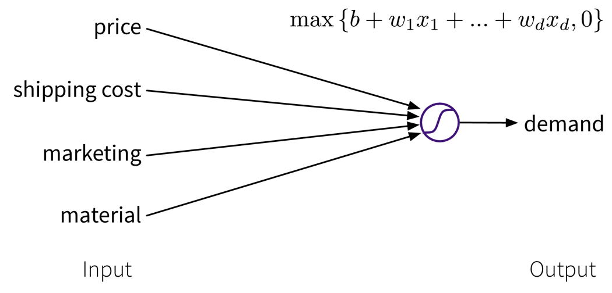
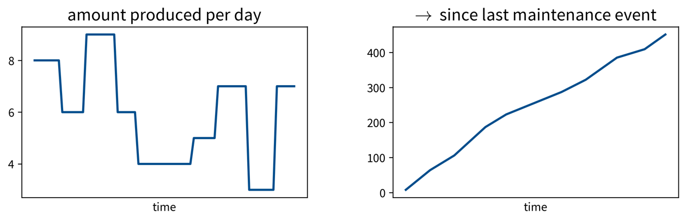

Why read this book?
There are a lot of machine learning (ML) resources out there. Many of them either targeted at students or researchers and rather heavy on the mathematical theory, or others in the form of tutorials, focusing on the concrete implementation and application of some ML algorithm to a specific problem. This book tries to find a middle ground between both the theoretical background, which I have studied in depth while completing my PhD in machine learning at the TU Berlin, Germany, and the practical applications of these algorithms to solve different problems, as I have been doing in the last few years as an independent data science consultant for various firms. This book originated from my experience holding dozens of machine learning seminars and workshops in front of audiences with varying levels of technical and mathematical background.

Questions this book answers:
-
Which problems can machine learning (ML) solve?
-
How does ML solve these problems, i.e., how do the algorithms work (in theory)?
-
How do you actually get this to work in practice and avoid common pitfalls?
This book does not explain the latest fancy neural network model that achieves state-of-the-art performance on some specific task. Instead it provides a general intuition for the ideas behind different machine learning algorithms to establish a solid framework that helps you better understand and integrate into a bigger picture what you later read about these specific approaches.
This book and the associated courses exist in two versions:
The condensed version is written for all audiences, i.e., readers generally interested in ML, who want to understand what is behind the hype and where ML can — or should not — be used. The full version is mainly written for ML practitioners and assumes the reader is familiar with elementary concepts of linear algebra (see also this overview on the mathematical notation used in the book).
While the book focuses on the general principles behind the different models, there are also references included to specific Python libraries (mostly scikit-learn) where the respective algorithms are implemented and tips for how to use them. To get an even deeper understanding of how to apply the different algorithms, I recommend that you try to solve some exercises covering different ML use cases.
This is still a draft version! Please write me an email or fill out the feedback survey, if you have any suggestions for how this book could be improved!
Enjoy! :-)
- Acknowledgments
-
I would like to thank: Antje Relitz for her feedback & contributions to the original workshop materials, Robin Horn for his feedback & help with the German translation of the book, and Karin Zink for her help with some of the graphics (incl. the book cover).
- How to cite
@misc{horn2021mlpractitioner,
author = {Horn, Franziska},
title = {A Practitioner's Guide to Machine Learning},
year = {2021},
url = {https://franziskahorn.de/mlbook/},
}
Introduction
This chapter provides some motivating examples illustrating the rise of machine learning (ML).
ML is everywhere!
Machine learning is already used all around us to make our lives more convenient:
Face recognition
Face recognition technology is one of the earliest notable examples of machine learning and computer vision that can nowadays be found in every digital camera and smartphone.
While the algorithms implemented in a camera application are fairly simple and only detect the presence of faces in general to make sure you look your best when the picture is taken, more sophisticated algorithms are also being used by governments and law enforcement in more and more countries to match a detected face to a known person in their biometric databases, for example, to identify criminals. So…smile!?

Object recognition (e.g., for self-driving cars)
Another example from the area of computer vision is object recognition or image segmentation in general. This is, for example, used in self-driving cars to make sure they are aware of street signs and pedestrians.

Analysis of medical images
The last example on image data comes from the application area of medicine: Below you see two images of retinas, i.e., photos taken of the back of someone’s eye, based on which it is possible to diagnose a common complication of diabetes that can result in blindness if left untreated.
The diagnostic algorithm to identify the markers of the disease in these images was developed by researchers at Google and achieves the same level of accuracy as human experts in the field. Google had even assembled a team of top specialists to discuss the hardest cases again to get consistent labels for all images, which gave their model an additional performance boost.
Since the equipment to take these images is fairly cheap, this means that with this ML model, expert diagnostic decisions can now be made available to those that might otherwise not have had the means to consult a top specialist.

Conversational agents (i.e., speech recognition…)
Leaving the field of computer vision, now an example from the area of natural language processing (NLP): Conversational agents, like Siri or Alexa, are waiting for commands in many people’s homes. While many of the answers they give are still scripted by humans (as in the screenshot below), the real challenge is to understand what the person had actually said in the first place. Speech recognition, i.e., automatically transcribing spoken language into text, is a rather difficult problem, for example, since people speak with different accents and there can be additional background noises.

Machine translation
Again from the field of NLP: machine translation, i.e., automatically translating text from one language into another.
If you have used Google Translate (shown as an example in the screenshot below) after it was first released in 2006, you were probably often quite disappointed with the results, as the translated sentences read more like the words were just looked up one after another in a dictionary (= statistical machine translation). However, this changed when Google made the switch to a neural network model to generate the translations 10 years later in 2016: now the translated texts are actually readable and usually require only minor manual corrections, if any.

Recommender systems
Another application area are recommender systems, for example, on e-commerce platforms (like Amazon in the screenshot below) to provide the user with helpful search results and suggestions, and thereby generate revenue for the respective companies. They are also used on social media platforms and by Netflix, YouTube & co to keep you glued to your screen.
Sometimes the provided suggestions might help you find exactly what you were looking for. But especially platforms with uncurated content such as YouTube have also been criticized for fostering, e.g., conspiracy theories through these personalized recommendations. Since this kind of content kept users especially engaged, it was recommended a lot and thereby drove the users further down some rabbit hole instead of also providing perspectives outside one’s own information bubble.
But on the upside, the research on recommender systems has also sparked developments in other areas of science, such as methods that recommend drug molecules that fit to the proteins playing a key role in certain diseases to accelerate the search for a cure.


Better than humans: AlphaGo
In 2016, DeepMind, a startup subsequently acquired by Google, presented AlphaGo, the first computer program to beat a human Go master.
This was a huge milestone for the AI research community, as Go, with a 19 x 19 playing field, is a lot more complex than chess (8 x 8 tiles and more restrictive movement patterns), and even the most optimistic AI researchers had not expected that a computer could win against a Go master before 2020.
The algorithms used in AlphaGo are from the subfield of reinforcement learning, which we will discuss in more detail later.

Protein folding - solving a 50-year-old challenge
DeepMind presented another major success story in 2020: Their AlphaFold model now estimates the 3D structure of a protein from its raw amino acid sequence as accurately as traditional simulation models.
Proteins often play a key role in diseases. If we know a protein’s 3D structure, we can determine which drug molecules can bind to it and thereby identify target structures that should be investigated further to find a cure for the disease.
While exact simulation models to estimate a protein’s 3D structure existed for a long time, these were very slow and it often took several days to compute the folding for a single protein. With the new neural network model, the same computation can now be done in a matter of minutes or even seconds, thereby vastly accelerating drug development.

Neural networks getting creative
Lots of fun applications use neural networks to create new content, i.e., perform creative tasks that were previously thought exclusive to humans.
For example, an AI has written a slightly confusing yet hilarious script for a movie, which was then actually produced.
Neural networks are also used to visualize music by combining and transforming images, like in the video below:
And you’ve probably also seen some examples of “Neural Style Transfer” before, a technique that can, for example, be used to make your social media profile picture look like a van Gogh painting:

Even stock photos are now basically obsolete, since we can use neural networks to generate images given a textual description:

And chatbots can hold conversations and provide information in a variety of styles:

ML history: Why now?
Why is there such a rise in ML applications? Not only in our everyday lives has ML become omnipresent, but also the number of research paper published each year has increased exponentially:

Interestingly, this is not due to an abundance of groundbreaking theoretical accomplishments in the last few years (indicated as purple diamonds in the plot), but rather many of the algorithms used today were actually developed as far back as the late 50s / early 60s. For example, the perceptron is a precursor of neural networks, which are behind all the examples shown in the last section. Indeed, the most important neural network architectures, recurrent neural networks (RNN) and convolutional neural networks (CNN), which provide the foundation for state-of-the-art language and image processing respectively, were developed in the early 80s and 90s. But back then we lacked the computational resources to use them on anything more than small toy datasets.
This is why the rise in ML publications correlates more closely with the number of transistors on CPUs (i.e., the regular processors in normal computers) and GPUs (graphics cards, which parallelize the kinds of computations needed to train neural network models efficiently):

Additionally, the release of many open source libraries, such as scikit-learn (for traditional ML models) and theano, tensorflow, and (py)torch (for the implementation of neural networks), has further facilitated the use of ML algorithms in many different fields.
| While these libraries democratize the use of ML, unfortunately, this also brings with it the downside that ML is now often applied without a sound understanding of the theoretical underpinnings of these algorithms or their assumptions about the data. This can result in models that don’t show the expected performance and subsequently some (misplaced) disappointment in ML. In the worst case, it can lead to models that discriminate against certain parts of the population, e.g., credit scoring algorithms used by banks that systematically give women loans at higher interest rates than men due to biases encoded in the historical data used to train the models. We’ll discuss these kinds of issues in the chapter on avoiding common pitfalls. |
Another factor driving the spread of ML is the availability of (digital) data. Companies like Google, Amazon, and Meta have had a head start here, as their business model was built around data from the start, but other companies are starting to catch up. While traditional ML models do not benefit much from all this available data, large neural network models with many degrees of freedom can now show their full potential by learning from all the texts and images posted every day on the Internet:

The Basics
This chapter provides a general introduction into what machine learning (ML) actually is and where it can — or should not — be used.
Data is the new oil!?
Let’s take a step back. Because it all begins with data.
You’ve probably heard this claim before: “Data is the new oil!”. This suggests that data is valuable. But is it?
The reason why oil is considered valuable is because we have important use cases for it: powering our cars, heating our homes, and producing plastics or fertilizers.
Similarly, our data is only as valuable as what we make of it. So what can we use data for?
The main use cases belong to one of two categories:

Insights
We can generate insights either through continuous monitoring (“Are we on track?”) or a deeper analysis (“What’s wrong?”).
By visualizing important variables or Key Performance Indicators (KPIs) in reports or dashboards, we increase transparency of the status quo and quantify our progress towards some goal. When a KPI is far from its target value, we can dig deeper into the data with an exploratory data analysis to identify the root cause of the problem and answer questions such as
-
Why are we not reaching our goal?
-
What should we do next?
However, as we’ll discuss in more detail in the section on data analysis, arriving at satisfactory answers is often more art than science .
Automation
As described in the following sections, machine learning models can be used to automate ‘input → output’ tasks otherwise requiring a human (expert). These tasks are usually easy for an (appropriately trained) human, for example:
-
Translating texts from one language into another
-
Sorting out products with scratches when they pass a checkpoint on the assembly line
-
Recommending movies to a friend
For this to work, the ML models need to be trained on a lot of historical data (e.g., texts in both languages, images of products with and without scratches, information about different users and which movies they watched).
The resulting software can then either be used to automate the task completely or we can keep a human in the loop that can intervene and correct the suggestions made by the model.
What is ML?
OK, now what exactly is this machine learning that is already transforming all of our lives?
First of all, ML is an area of research in the field of theoretical computer science, i.e., at the intersection of mathematics and computer science:

More specifically, machine learning is an umbrella term for algorithms that recognize patterns and learn rules from data.
| Simply speaking, an algorithm can be thought of as a strategy or recipe for solving a certain kind of problem. For example, there exist effective algorithms to find the shortest paths between two cities (e.g., used in Google Maps to give directions) or to solve scheduling problems, such as: “Which task should be done first and which task after that to finish all tasks before their respective deadlines and satisfy dependencies between the tasks.” Machine learning deals with the subset of algorithms that detect and make use of statistical regularities in a dataset to obtain specific results. |
Analogous to the tools used in a traditional manufacturing process to build something, you can think of ML algorithms as tools to generate value from data:

In order to successfully apply ML, you should ask yourself some important questions:
-
What could be valuable? For example, this could be a new feature for an existing product, like Face ID as a new way to unlock your phone.
-
What raw inputs are needed? We can’t build a wooden chair using only fabric and metal or a few twigs we found in the woods. Similarly, depending on what we want to achieve with ML, we also need the right data (quality & quantity) to apply the algorithms in the first place. This can be especially tricky since in most cases we can’t just buy the data we need like wood at a hardware store, but we have to collect it ourselves, i.e., grow our own trees, which can take some time.
-
Which ML algorithm is the right tool for the task? (I.e., which category of ML algorithms produces the type of output we want?)
-
Do I or my employees have the necessary skills and enough compute power to accomplish this in practice?
We can think of the different ML algorithms as our ML toolbox:

- ML algorithms solve “input → output” problems
-
What all of these ML algorithms have in common, is that they solve “input → output” problems like these:

In the above examples, while a human (expert) could easily produce the correct output given the input (e.g., even a small child can recognize the cat in the first image), humans have a hard time describing how they arrived at the correct answer (e.g., how did you know that this is a cat (and not a small dog)? because of the pointy ears? the whiskers?). ML algorithms can learn such rules from the given data samples.
ML vs. traditional software
While traditional software solutions are used to automate tasks that can be formulated as a fixed, predefined sequence of actions, executed according to some hard-coded rules (e.g., “a gate should open if an object passes through a photoelectric barrier and 20 seconds later the gate should close again”), machine learning can be used to automate “input → output” tasks for which it would otherwise be difficult to come up with such rules.
For example, the quality control in a cookie factory is such an “input (cookie) → output (ok/defective)” task: While some broken cookies could be sorted out automatically by checking that each cookie weights around 15g, it would be difficult to formulate rules that reliably catch all possible defects. So either a human could watch the production line to additionally recognize, e.g., over-baked cookies, or one could take pictures of the cookies and use them as input for a machine learning model to recognize the defective cookies:

To solve this problem with ML, first a large dataset needs to be compiled with photos of many good, but also all kinds of defective cookies, including the corresponding annotations, i.e., a label for each picture whether it displays a good or defective cookie (not necessarily specifying the kind of defect). An ML algorithm can then learn to distinguish between good and defective cookies from these examples.
- Steps to identify a potential ML project
-
-
Create a process map: which steps are executed in the business process (flow of materials & information) and what data is collected where. For example, in a production process where some of the produced parts are defective:
 -
Identify parts of the process that could either be automated with ML (e.g., straightforward, repetitive tasks otherwise done by humans) or in other ways improved by analyzing data (e.g., to understand root causes of a problem, to improve planning with what-if simulations, or to optimize the use of resources):
 The first idea is to automate the quality check that was so far done by a human: since the human can easily recognize the defects in the pictures taken of the products, an ML model should be able to do this, too. The next idea is to try to predict in advance whether a product will be faulty or not based on the composition of raw materials and the proposed process conditions: success here is unclear, since the human experts are not sure whether all of the information necessary to determine if the product will be fine is contained in this data — but nevertheless it’s worth a try since this could save lots of resources. While the final ML model that solves the input-output problem can be deployed as software in the ongoing process, when a data scientist analyzes the results and interprets the model, she can additionally generate insights that can be translated into action recommendations.
The first idea is to automate the quality check that was so far done by a human: since the human can easily recognize the defects in the pictures taken of the products, an ML model should be able to do this, too. The next idea is to try to predict in advance whether a product will be faulty or not based on the composition of raw materials and the proposed process conditions: success here is unclear, since the human experts are not sure whether all of the information necessary to determine if the product will be fine is contained in this data — but nevertheless it’s worth a try since this could save lots of resources. While the final ML model that solves the input-output problem can be deployed as software in the ongoing process, when a data scientist analyzes the results and interprets the model, she can additionally generate insights that can be translated into action recommendations. -
Prioritize: which project will have a high impact, but at the same time also a good chance of success, i.e., should yield a high return on investment (ROI)? For example, using ML to automate a simple task is a comparatively low risk investment, but might cause some assembly-line workers to loose their jobs. In contrast, identifying the root causes of why a production process results in 10% scrap could save millions, but it is not clear from the start that such an analysis will yield useful results, since the collected data on the process conditions might not contain all the needed information.
-
How do machines “learn”?
How do ML algorithms solve these “input → output” problems, i.e., how do they recognize patterns and learn rules from data?
The set of ML algorithms can be subdivided according to their learning strategy. This is inspired by how humans learn:

Analogously, machines can also learn by following these three strategies:

- Data requirements for learning according to these strategies:
-
-
Unsupervised Learning: a dataset with examples

-
Supervised Learning: a dataset with labeled examples

-
Reinforcement Learning: a (simulation) environment that generates data (i.e., reward + new state) in response to the agent’s actions

With its reliance on a data-generating environment, reinforcement learning is a bit of a special case. Furthermore, as of now it’s still really hard to get reinforcement learning algorithms to work correctly, which means they’re currently mostly used in research and not so much for practical applications.
-
Supervised Learning
Supervised learning is the most common type of machine learning used in today’s applications.
The goal here is to learn a model (= a mathematical function) \(f(x)\) that describes the relationship between some input(s) \(x\) (e.g., different process conditions like temperature, type of material, etc.) and output \(y\) (e.g., resulting product quality).
This model can then be used to make predictions for new data points, i.e., compute \(f(x') = y'\) for some new \(x'\) (e.g., predict for a new set of process conditions whether the produced product will be of high quality or if the process should be stopped to not waste resources).
- Supervised Learning in a nutshell:
-
Before we start, we need to be very clear on what we want, i.e., what should be predicted, how will predicting this variable help us achieve our overall goals and create value, and how do we measure success, i.e., what is the Key Performance Indicator (KPI) of our process. Then, we need to collect data — and since we’re using supervised learning, this needs to be labeled data, with the labels corresponding to the target variable that we want to predict. Next, we “learn” (or “train” or “fit”) a model on this data and finally use it to generate predictions for new data points.
“Learning” a model from the data
Goal: Describe the relationship between input(s) \(x\) and output \(y\) with a model, i.e., a mathematical function \(f(x)\)

-
Select a model class (= structure of the function): Assumption: relationship is linear
→ linear regression model: \(y = f(x) = b + w\cdot x\) -
Define an objective: Minimize error between true & predicted \(y\):
→ \(\min_{b,w} \sum_i (y_i - f(x_i))^2\) -
Find best model parameters given the data: i.e., solve the optimization problem defined in step 2
⇒ \(f(x) = -2.7 + 5.2x\)
| Video Recommendation: If you’re not familiar with linear regression, the most basic supervised learning algorithm, please watch the explanation from Google decision scientist Cassie Kozyrkov on how linear regression works: [Part 1] [Part 2] [Part 3] |
The available supervised learning algorithms differ in the type of \(x \to y\) relationship they can describe (e.g., linear or nonlinear) and what kind of objective they minimize (also called loss function; an error computed on the training data, quantifying the mismatch between true and predicted labels). The task of a data scientist is to select a type of model that can optimally fit the given data. The rest is then taken care of by an optimization method, which finds the parameters of the model that minimize the model’s objective, i.e., such that the model’s prediction error on the given data is as small as possible.
| In most of the book, the terms “ML algorithm” and “ML model” will be used interchangeably. To be more precise, however, in general the algorithm processes the data and learns some parameter values. These parameter settings define the final model. For example, a linear regression model is defined by its coefficients (i.e., the model’s parameters), which are found by executing the steps outlined in the linear regression algorithm, which includes solving an optimization problem. |
Don’t stop there!

- Predictive Analytics
-
By feeding historical data to a supervised learning algorithm, we can generate a predictive model that makes predictions about future scenarios to aid with planning.
Example: Use sales forecasts to better plan inventory levels. - Interpreting Predictive Models
-
Given a model that makes accurate predictions for new data points, we can interpret this model and explain its predictions to understand root causes in a process.
Example: Given a model that predicts the quality of a product from the process conditions, identify which conditions result in lower quality products. - What-if Analysis & Optimization
-
Given a model that makes accurate predictions for new data points, we can use this model in a “what-if” forecast to explore how a system might react to different conditions to make better decisions (but use with caution!).
Example: Given a model that predicts the remaining lifetime of a machine component under some process conditions, simulate how quickly this component would deteriorate if we changed the process conditions.Going one step further, this model can also be used inside an optimization loop to automatically evaluate different inputs with the model systematically to find optimal settings.
Example: Given a model that predicts the quality of a product from the process conditions, automatically determine the best production settings for a new type of raw material.
ML use cases
The inputs that the ML algorithms operate on can come in many forms…
- Structured vs. unstructured data
-
Data can come in various forms and while some data types require additional preprocessing steps, in principle ML algorithms can be used with all kinds of data.
 The main distinction when characterizing data is made between structured data, which is any dataset that contains individual measurements / variables / attributes / features that represent unique quantities, and unstructured data, which can not be subdivided into meaningful variables. For example, in images “first pixel from the left” or in texts “10th word in the second paragraph” is not what we would call a variable, while “size in square meters” and “number of bedrooms” are useful quantities to describe an apartment. Structured data is often heterogeneous, since the different variables in a dataset typically stand for very different things. For example, when working with sensor data, a dataset normally does not consist of only temperature measurements, but additionally it could contain, e.g., pressure and flow values, which have different units and measurement scales. Unstructured data, on the other hand, is homogeneous, e.g., there is no qualitative difference between the 10th and the 100th pixel in an image.
The main distinction when characterizing data is made between structured data, which is any dataset that contains individual measurements / variables / attributes / features that represent unique quantities, and unstructured data, which can not be subdivided into meaningful variables. For example, in images “first pixel from the left” or in texts “10th word in the second paragraph” is not what we would call a variable, while “size in square meters” and “number of bedrooms” are useful quantities to describe an apartment. Structured data is often heterogeneous, since the different variables in a dataset typically stand for very different things. For example, when working with sensor data, a dataset normally does not consist of only temperature measurements, but additionally it could contain, e.g., pressure and flow values, which have different units and measurement scales. Unstructured data, on the other hand, is homogeneous, e.g., there is no qualitative difference between the 10th and the 100th pixel in an image.
…but our goal, i.e., the desired outputs, determines the type of algorithm we should use for the task:

Some example input → output tasks and what type of ML algorithm solves them:
| Input \(X\) | Output \(Y\) | ML Algorithm Category |
|---|---|---|
questionnaire answers |
customer segmentation |
clustering |
sensor measurements |
everything normal? |
anomaly detection |
past usage of a machine |
remaining lifetime |
regression |
spam (yes/no) |
classification (binary) |
|
image |
which animal? |
classification (multi-class) |
user’s purchases |
products to show |
recommender systems |
search query |
relevant documents |
information retrieval |
audio |
text |
speech recognition |
text in English |
text in French |
machine translation |
To summarize (see also: overview table as PDF):
- Existing ML solutions & corresponding output (for one data point):
-
-
Dimensionality Reduction: (usually) 2D coordinates (to create a visualization of the dataset)
-
Outlier/Anomaly Detection: anomaly score (usually a value between 0 and 1 indicating how likely it is that this point is an outlier)
-
Clustering: cluster index (a number between 0 and k-1 indicating to which of the k clusters a data point belongs (or -1 for outliers))
-
Regression: a continuous value (any kind of numeric quantity that should be predicted)
-
Classification: a discrete value (one of several mutually exclusive categories)
-
Deep Learning: unstructured output like a text or image (e.g., speech recognition, machine translation, image generation, or neural style transfer)
-
Recommender Systems & Information Retrieval: ranking of a set of items (recommender systems, for example, rank the products that a specific user might be most interested in; information retrieval systems rank other items based on their similarity to a given query item)
-
Reinforcement Learning: a sequence of actions (specific to the state the agent is in)
-
Let’s start with a more detailed look at the different unsupervised & supervised learning algorithms and what they are good for:

| Even if our ultimate goal is to predict something (i.e., use supervised learning), it can still be helpful to first use unsupervised learning to get a better understanding of the dataset, for example, by visualizing the data with dimensionality reduction methods to see all samples and their diversity at a glance, by identifying outliers to clean the dataset, or, for classification problems, by first clustering the samples to check whether the given class labels match the naturally occurring groups in the data or if, e.g., two very similar classes could be combined to simplify the problem. |
Dimensionality Reduction
-
create a 2D visualization to explore the dataset as a whole, where we can often already visually identify patterns like samples that can be grouped together (clusters) or that don’t belong (outliers)
-
noise reduction and/or feature engineering as a data preprocessing step to improve the performance in the following prediction task
- Example Unsupervised Learning: Dimensionality Reduction
-
Goal: Visualize the dataset

-
transforming the data with dimensionality reduction methods constructs new features as a (non)linear combination of the original features, which decreases the interpretability of the subsequent analysis results
Anomaly Detection
-
clean up the data, e.g., by removing samples with wrongly entered values, as a data preprocessing step to improve the performance in the following prediction task
-
create alerts for anomalies, for example:
-
fraud detection: identify fraudulent credit card transaction in e-commerce
-
monitor a machine to see when something out of the ordinary happens or the machine might require maintenance
-
- Example Unsupervised Learning: Anomaly Detection
-
Goal: Find outliers in the dataset

-
you should always have a good reason for throwing away data points — outliers are seldom random, sometimes they reveal interesting edge cases that should not be ignored
Clustering
-
identify groups of related data points, for example:
-
customer segmentation for targeted marketing campaign
-
- Example Unsupervised Learning: Clustering
-
Goal: Find naturally occurring groups in the dataset

-
no ground truth: difficult to choose between different models and parameter settings → the algorithms will always find something, but whether this is useful (i.e., what the identified patterns mean) can only be determined by a human in a post-processing step
-
many of the algorithms rely on similarities or distances between data points, and it can be difficult to define an appropriate measure for this or know in advance which features should be compared (e.g., what makes two customers similar?)
Unsupervised learning has no ground truth
It is important to keep in mind that unsupervised learning problems have no right or wrong answers. Unsupervised learning algorithms simply recognize patterns in the data, which may or may not be meaningful for us humans.
For example, there exist a bunch of different unsupervised learning algorithms that group data points into clusters, each with a slightly different strategy and definition of what it means for two samples to be similar enough that they can be put into the same cluster.

It is up to the data scientist to examine the results of an unsupervised learning algorithm and make sense of them. And if they don’t match our expectations, we can simply try a different algorithm.
Regression & Classification
-
Learn a model to describe an input-output relationship and make predictions for new data points, for example:
-
predict in advance whether a product produced under the proposed process conditions will be of high quality or would be a waste of resources
-
churn prediction: identify customers that are about to cancel their contract (or employees that are about to quit) so you can reach out to them and convince them to stay
-
price optimization: determine the optimal price for a product (often used for dynamic pricing, e.g., to adapt prices based on the device a customer uses (e.g., new iPhone vs old Android phone) when accessing a website)
-
predictive maintenance: predict how long a machine component will last
-
sales forecasts: predict revenue in the coming weeks and how much inventory will be required to satisfy the demand
-
- Example Supervised Learning: Classification
-
Goal: Predict a discrete value for each data point

- Example Supervised Learning: Regression
-
Goal: Predict a continuous value for each data point

-
success is uncertain: while it is fairly straightforward to apply the models, it is difficult to determine in advance whether there even exists any relation between the measured inputs and targets (→ beware of garbage in, garbage out!)
-
appropriate definition of the output/target/KPI that should be modeled, i.e., what does it actually mean for a process to run well and how might external factors influence this definition (e.g., can we expect the same performance on an exceptionally hot summer day?)
-
missing important input variables, e.g., if there exist other influencing factors that we haven’t considered or couldn’t measure, which means not all of the target variable’s variance can be explained
-
lots of possibly irrelevant input variables that require careful feature selection to avoid spurious correlations, which would result in incorrect ‘what-if’ forecasts since the true causal relationship between the inputs and outputs isn’t captured
-
often very time intensive data preprocessing necessary, e.g., when combining data from different sources and engineering additional features
Deep Learning
-
automate tedious, repetitive tasks otherwise done by humans, for example (see also ML is everywhere!):
-
text classification (e.g., identify spam / hate speech / fake news; forward customer support request to the appropriate department)
-
sentiment analysis (subtask of text classification: identify if text is positive or negative, e.g., to monitor product reviews or what social media users are saying about your company)
-
speech recognition (e.g., transcribe dictated notes or add subtitles to videos)
-
machine translation (translate texts from one language into another)
-
image classification / object recognition (e.g., identify problematic content (like child pornography) or detect street signs and pedestrians in autonomous driving)
-
image captioning (generate text that describes what’s shown in an image, e.g., to improve the online experience for for people with visual impairment)
-
predictive typing (e.g., suggest possible next words when typing on a smartphone)
-
data generation (e.g., generate new photos/images of specific objects or scenes)
-
style transfer (transform a given image into another style, e.g., make photos look like van Gogh paintings)
-
separate individual sources of an audio signal (e.g., unmix a song, i.e., separate vocals and instruments into individual tracks)
-
-
replace classical simulation models with ML models: since exact simulation models are often slow, the estimation for new samples can be speed up by instead predicting the results with an ML model, for example:
-
AlphaFold: generate 3D protein structure from amino acid sequence (to facilitate drug development)
-
SchNet: predict energy and other properties of molecules given their configuration of atoms (to speed up materials research)
-
-
selecting a suitable neural network architecture & getting it to work properly; especially when replacing traditional simulation models it is often necessary to develop a completely new type of neural network architecture specifically designed for this task and inputs / outputs, which requires a lot of ML & domain knowledge, intuition, and creativity
-
computational resources (don’t train a neural network without a GPU!)
-
data quality and quantity: need a lot of consistently labeled data, i.e., many training instances labeled by human annotators who have to follow the same guidelines (but can be mitigated in some cases by pre-training the network using self-supervised learning)
Information Retrieval
-
improve search results by identifying similar items: given a query, rank results, for example:
-
return matching documents / websites given a search query
-
show similar movies given the movie a user is currently looking at (e.g., same genre, director, etc.)
-
-
quality of results depends heavily on the chosen similarity metric; identifying semantically related items is currently more difficult for some data types (e.g., images) than others (e.g., text)
Recommender Systems
-
personalized suggestions: given a sample from one type of data (e.g., user, protein structure), identify the most relevant samples from another type of data (e.g., movie, drug composition), for example:
-
show a user movies that other users with a similar taste also liked
-
recommend molecule structures that could fit into a protein structure involved in a certain disease
-
-
little / incomplete data, for example, different users might like the same item for different reasons and it is unclear whether, e.g., a user didn’t watch a movie because he’s not interested in it or because he just didn’t notice it yet
Reinforcement Learning
-
Determine an optimal sequence of actions given changing environmental conditions, for example:
-
virtual agent playing a (video) game
-
robot with complex movement patterns, e.g., picking up differently shaped objects from a box
-
⇒ Unlike in regular optimization, where the optimal inputs given a single specific external condition are determined, here an “agent” (= the RL algorithm) tries to learn an optimal sequence of inputs to maximize the cumulative reward received over multiple time steps, where there can be a significant time delay between the inputs and the rewards that they generate (e.g., in a video game we might need to pick up a key in the beginning of a level, but the door that can be opened with it only comes several frames later).
-
usually requires a simulation environment for the agent to learn in before it starts acting in the real world, but developing an accurate simulation model isn’t easy and the agent will exploit any bugs if that results in higher rewards
-
can be tricky to define a clear reward function that should be optimized (imitation learning is often a better option, where the agent instead tries to mimic the decisions made by a human in some situation)
-
difficult to learn correct associations when there are long delays between critical actions and the received rewards
-
agent generates its own data: if it starts off with a bad policy, it will be tricky to escape from this (e.g., in a video game, if the agent always falls down a gap instead of jumping over it, it never sees the rewards that await on the other side and therefore can’t learn that it would be beneficial to jump over the gap)
Other
| ML algorithms are categorized by the output they generate for each input. If you want to solve an ‘input → output’ problem with a different output than the ones listed above, you’ll likely have to settle in for a multi-year research project — if the problem can be solved with ML at all! |
Solving problems with ML
Solving “input → output” problems with ML requires three main steps:

1. Identify a suitable problem
The first (and arguably most important) step is to identify where machine learning can (and should) be used in the first place.
2. Devise a working solution
Once a suitable “input → output” problem as been identified, historical data needs to be gathered and the right ML algorithm needs to be selected and applied to obtain a working solution. This is what the next chapters are all about.
To solve a concrete problem using ML, we follow a workflow like this:

Unfortunately, due to a lack of standardized data infrastructure in many companies, the sad truth is that usually (at least) about 90% of a Data Scientist’s time is spent collecting, cleaning, and otherwise preprocessing the data to get it into a format where the ML algorithms can be applied:

While sometimes frustrating, the time spent cleaning and preprocessing the data is never wasted, as only with a solid data foundation the ML algorithms can achieve decent results.
3. Get it ready for production
When the prototypical solution has been implemented and meets the required performance level, this solution then has to be deployed, i.e., integrated into the general workflow and infrastructure so that it can actually be used to improve the respective process in practice (as a piece of software that continuously makes predictions for new data points). There are generally two strategies for how to do this:
-
The ML model runs on an “edge” device, i.e., on each individual machine (e.g., mobile phone) where the respective data is generated and the output of the model is used in subsequent process steps. This is often the best strategy when results need to be computed in real time and / or a continuous Internet connection can not be guaranteed, e.g., in self-driving cars. However, the downside of this is that, depending on the type of ML model, comparatively expensive computing equipment needs to be installed in each machine, e.g., GPUs for neural network models.
-
The ML model runs in the “cloud”, i.e., on a central server, e.g., in the form of a web application that receives data from individual users, processes it, and sends back the results. This is often the more efficient solution, if a response within a few seconds is sufficient for the use case. However, processing personal information in the cloud also raises privacy concerns. One of the major benefits of this solution is that it is easier to update the ML model, for example, when more historical data becomes available or if the process changes and the model now has to deal with slightly different inputs (we’ll discuss this further in later chapters).
→ As these decisions heavily depend on your specific use case, they go beyond the scope of this book. Search online for “MLOps” or read the book Designing Machine Learning Systems to find out more about these topics and hire a machine learning or data engineer to set up the required infrastructure in your company.
ML with Python
The exercises accompanying this book use the programming language Python.
- Why Python?
-
-
free & open source (unlike, e.g., MatLab)
-
easy; fast prototyping
-
general purpose language (unlike, e.g., R): easy to incorporate ML into regular applications or web apps
-
fast: many numerical operations are backed with C libraries
-
a lot of open source ML libraries with a very active community!!
-
- How?
-
-
regular scripts (i.e., normal text files ending in
.py), especially useful for function definitions that can be reused in different projects -
iPython shell: interactive console to execute code
-
Jupyter Notebooks (i.e., special files ending in
.ipynb): great for experimenting & sharing work with others (also works with other programming languages: Jupyter stands for Julia, Python, and R; you can even mix languages in the same notebook)
-
If you’re unfamiliar with Python, have a look at this Python tutorial specifically written to teach you the basics needed for the examples in this book. This cheat sheet additionally provides a summary of the most important steps when developing a machine learning solution, incl. code snippets using the libraries introduced below.
Overview of Python Libraries for ML
The libraries are always imported with specific abbreviations (e.g., np or pd). It is highly recommended that you stick to these conventions and you will also see this in many code examples online (e.g., on StackOverflow).
|
import numpy as nppandas-
higher level data manipulation with data stored in a
DataFrametable similar to R; very useful for loading data, cleaning, and some exploration with different plots
import pandas as pdmatplotlib(&seaborn)-
create plots (e.g.,
plt.plot(),plt.scatter(),plt.imshow()).
import matplotlib.pyplot as pltplotly-
create interactive plots (e.g.,
px.parallel_coordinates())
import plotly.express as pxscikit-learn-
includes a lot of (non-deep learning) machine learning algorithms, preprocessing tools, and evaluation functions with an unified interface, i.e., all models (depending on their type) have these
.fit(),.transform(), and/or.predict()methods, which makes it very easy to switch out models in the code by just changing the line where the model was initialized
# import the model class from the specific submodule
from sklearn.xxx import Model
from sklearn.metrics import accuracy_score
# initialize the model (usually we also set some parameters here)
model = Model()
# preprocessing/unsupervised learning methods:
model.fit(X) # only pass feature matrix X
X_transformed = model.transform(X) # e.g., the StandardScaler would return a scaled feature matrix
# supervised learning methods:
model.fit(X, y) # pass features and labels for training
y_pred = model.predict(X_test) # generate predictions for new points
# evaluate the model (the internal score function uses the model's prefered evaluation metric)
print("The model is this good:", model.score(X_test, y_test)) # .score() internally calls .predict()
print("Equivalently:", accuracy_score(y_test, y_pred)) import torch
(from tensorflow import keras)- Additional useful libraries to publish and share your work:
- Additional useful Natural Language Processing (NLP) libraries:
-
-
transformers(Hugging Face: pre-trained neural network models for different tasks) -
spacy(modern & fast NLP tools) -
nltk(traditional NLP tools) -
gensim(topic modeling) -
beautifulsoup(for parsing websites)
-
Data Analysis & Preprocessing
As we’ve seen, ML algorithms solve input-output tasks. And to solve an ML problem, we first need to collect data, understand it, and then transform (“preprocess”) it in such a way that ML algorithms can be applied:

Data Analysis
Analyzing data is not only an important step before using this data for a machine learning project, but can also generate valuable insights that result in better (data-driven) decisions. We usually analyze data for one of two reasons:
-
We need some specific information to make a (better) decision (reactive analysis, e.g., when something went wrong and we don’t know why).
-
We’re curious about the data and don’t know yet what the analysis will bring (proactive analysis, e.g., to better understand the data at the beginning of an ML project).
- Data analysis results can be obtained and communicated in different formats
-
-
A custom analysis with results presented, e.g., in a power point presentation
-
A standardized report, e.g., in form of a PDF document, showing static data visualizations of historical data
-
A dashboard, i.e., a web app showing (near) real-time data, usually with some interactive elements (e.g., options to filter the data)

While the data story that is told in a presentation is usually fixed, users have more opportunities to interpret the data and analyze it for themselves in an interactive dashboard.
-
What all forms of data analyses have in common is that we’re after “(actionable) insights”.
- What is an insight?
-
Psychologist Gary Klein defines an insight as “an unexpected shift in the way we understand things”.

Arriving at an insight requires two steps:
-
Notice something unexpected, e.g., a sudden drop or increase in some metric.
-
Understand why this happened, i.e., dig deeper into the data to identify the root cause.
When we understand why something happened, we can often also identify a potential action that could get us back on track, thereby making this an actionable insight.
| Knowing which values are unexpected and where it might pay off to dig deeper often requires some domain knowledge, so you might want to examine the results together with a subject matter expert. |
Ideally, we should continuously monitor important metrics in dashboards or reports to spot deviations from the norm as quickly as possible, while identifying the root cause often requires a custom analysis.

| As a data analyst you are sometimes approached with more specific questions or requests such as “We’re deciding where to launch a new marketing campaign. Can you show me the number of users for all European countries?”. In these cases it can be helpful to ask “why?” to understand where the person noticed something unexpected that prompted this analysis request. If the answer is “Oh, we just have some marketing budget left over and need to spend the money somewhere” then just give them the results. But if the answer is “Our revenue for this quarter was lower than expected” it might be worth exploring other possible root causes for this, as maybe the problem is not the number of users that visit the website, but that many users drop out before they reach the checkout page and the money might be better invested in a usability study to understand why users don’t complete the sale. |
Data-driven Decisions
While learning something about the data and its context is often interesting and can feel rewarding by itself, it is not yet valuable. Insights become valuable when they influence a decision and inspire a different course of action, better than the default that would have been taken without the analysis.

This means we need to understand which decision(s) the insights from our data analysis should influence.
| Not all decisions need to be made in a data-driven way. But decision makers should be transparent and upfront about whether a decision can be influenced by analysis results, i.e., what data would make them change their mind and choose a different course of action. If data is only requested to support a decision that in reality has already been made, save the analysts the time and effort! |
Before we conduct a data analysis we need to be clear on:
-
Who are the relevant stakeholders, i.e., who will consume the data analysis results (= our audience / dashboard users)?
-
What is their goal?
In business contexts, the users' goals are usually in some way related to making a profit for the company, i.e., increasing revenue (e.g., by solving a customer problem more effectively than the competition) or reducing costs.
The progress towards these goals is tracked with so called Key Performance Indicators (KPIs), i.e., custom metrics that tell us how well things are going. For example, if we’re working on a web application, one KPI we might want to track could be “user happiness”. Unfortunately, true user happiness is difficult to measure, but we can instead check the number of users returning to our site and how long they stay and then somehow combine these and other measurements into a proxy variable that we then call “user happiness”.
| A KPI is only a reliable measure, if it is not simultaneously used to control people’s behavior, as they will otherwise try to game the system (Goodhart’s Law). For example, if our goal is high quality software, counting the number of bugs in our software is not a reliable measure for quality, if we simultaneously reward programmers for every bug they find and fix. |
The first step when making a data-driven decision is to realize that we should act by monitoring our KPIs to see whether we’re on track to achieve our goals.
Ideally, this is achieved by combining these metrics with thresholds for alerts to automatically notify us if things go south and a corrective action becomes necessary. For example, we could establish some alert on the health of a system or machine to notify a technician when maintenance is necessary. To avoid alert fatigue, it is important to reduce false alarms, i.e., configure the alert such that the responsible person tells you “when this threshold is reached, I will drop everything else and go fix the problem” (not “at this point we should probably keep an eye on it”).
Depending on how frequently the value of the KPI changes and how quickly corrective actions show effects, we want to check for the alert condition either every few minutes to alert someone in real time or, for example, every morning, every Monday, or once per month if the values change more slowly.
- Is this significant?
-
Small variations in KPIs are normal and we should not overreact to noise. Statistics can tell us whether the observed deviation from what we expected is significant.
Statistical inference enables us to draw conclusions that reach beyond the data at hand. Often we would like to make a statement about a whole population (e.g., all humans currently living on this earth), but we only have access to a few (hopefully representative) observations to draw our conclusion from. Statistical inference is about changing our mind under uncertainty: We start with a null hypothesis (i.e., what we expected before looking at the data) and then check if what we see in the sample dataset makes this null hypothesis look ridiculous, at which point we reject it and go with our alternative hypothesis instead.
Example: Your company has an online store and wants to roll out a new recommendation system, but you are unsure whether customers will find these recommendations helpful and buy more. Therefore, before going live with the new system, you perform an A/B test, where a percentage of randomly selected users see the new recommendations, while the others are routed to the original version of the online store. The null hypothesis is that the new version is no better than the original. But it turns out that the average sales volume of customers seeing the new recommendations is a lot higher than that of the customers browsing the original site. This difference is so large that in a world where the null hypothesis was true, it would be extremely unlikely that a random sample would give us these results. We therefore reject the null hypothesis and go with the alternative hypothesis, that the new recommendations generate higher sales.In addition to rigorous statistical tests, there are also some rules of thumb to determine whether changes in the data warrant our attention: If a single sample lies three standard deviations (\(\sigma\)) above or below the mean or seven consecutive points fall above or below the average value, this is cause for further investigation.
 A control chart showing measurements taken over time that fluctuate around their mean value with points of interest marked in red.
A control chart showing measurements taken over time that fluctuate around their mean value with points of interest marked in red.Read this article to learn more about the difference between analysts and statisticians and why they should work on distinct splits of your dataset.
For every alert that is created, i.e., every time it is clear that a corrective action is needed, it is worth considering whether this action can be automated and to directly trigger this automated action together with the alert (e.g., if the performance of an ML model drops below a certain threshold, instead of just notifying the data scientist we could automatically trigger a retraining with the most recent data). If this is not possible, e.g., because it is not clear what exactly happened and therefore which action should be taken, we need a deeper analysis.
Digging deeper into the data can help us answer questions such as “Why did we not reach this goal and how can we do better?” (or, in rarer cases, “Why did we exceeded this goal and how can we do it again?”) to decide on the specific action to take.
| Don’t just look for data that confirms the story you want to tell and supports the action you wanted to take from the start (i.e., beware of confirmation bias)! Instead be open and actively try to disprove your hypothesis. |
Such an exploratory analysis is often a quick and dirty process where we generate lots of plots to better understand the data and where the difference between what we expected and what we saw in the data is coming from, e.g., by examining other correlated variables. However, arriving at satisfactory answers is often more art than science.
| When using an ML model to predict a KPI, we can interpret this model and its predictions to better understand which variables might influence the KPI. Focusing on the features deemed important by the ML model can be helpful if our dataset contains hundreds of variables and we don’t have time to look at all of them in detail. But use with caution — the model only learned from correlations in the data; these do not necessarily represent true causal relationships between the variables. |
- Analysis questions to answer before an ML project
-
-
Examine the raw data:
-
Is the dataset complete, i.e., does it contain all the variables and samples we expected to get?
-
-
Examine summary statistics (e.g., mean, standard deviation (std), min/max values, missing value count, etc.), for example, by calling
df.describe()on a pandas data frame:-
What does each variable mean? Given our understanding of the variable, are its values in a reasonable range?
-
Are missing values encoded as NaN (Not a Number) or as ‘unrealistic’ numeric values (e.g., -1 while normal values are between 0 and 100)?
-
Are missing values random or systematic (e.g., in a survey rich people are less likely to answer questions about their income or specific measurements are only collected under certain conditions)? → This can influence how missing values should be handled during preprocessing, e.g., whether it makes sense to impute them with the mean or some other specific value (e.g., zero).
-
-
Examine the distributions of individual variables (e.g., using histograms):
Histogram, strip plot, violin plot, box plot, and summary statistics of the same data.-
Are there any outliers? Are these genuine edge cases or can they be ignored (e.g., due to measurement errors or wrongly encoded data)?
-
Is the data normally distributed (otherwise we may have to transform the variable later)?
-
-
Examine trends over time (by plotting variables over time):
 What caused these trends and what are their implications for the future? [Adapted from: Data Visualization: A successful design process by Andy Kirk]
What caused these trends and what are their implications for the future? [Adapted from: Data Visualization: A successful design process by Andy Kirk]-
Are there time periods where the data was sampled irregularly or samples are missing? Why?
-
Are there any (gradual or sudden) data drifts over time? Are these genuine changes (e.g., due to changes in the raw materials used for production) or artifacts (e.g., due to a malfunctioning sensor recording wrong values)?
-
-
Examine relationships between variables (using scatter plots):
 Not all interesting relations between two variables can be detected through a high correlation coefficient. Always check the scatter plot for details. [Adapted from: Data Visualization: A successful design process by Andy Kirk]
Not all interesting relations between two variables can be detected through a high correlation coefficient. Always check the scatter plot for details. [Adapted from: Data Visualization: A successful design process by Andy Kirk]-
Are the observed correlations between variables expected?
-
-
Examine patterns in multidimensional data (using parallel coordinate plots):
 Each line in a parallel coordinate plot represents one data point, with the corresponding values for the different variables marked at the respective y-axis. The screenshot here shows an interactive plot created using the
Each line in a parallel coordinate plot represents one data point, with the corresponding values for the different variables marked at the respective y-axis. The screenshot here shows an interactive plot created using theplotlylibrary. By selecting value ranges for the different dimensions (indicated by the pink stripes), it is possible to spot interesting patterns resulting from a combination of values across multiple variables.-
Do the observed patterns in the data match our understanding of the problem and dataset?
-
-
| The data should not only be examined at the outset of an ML project, but also monitored continuously throughout the lifetime of the application, e.g., by regularly checking how many samples we received per hour, that the values for each variable are in the expected range, and that there are no unexpected missing values. |
Communicating Insights
The plots that were created during an exploratory analysis should not be the plots we show our audience when we’re trying to communicate our findings. Since our audience is far less familiar with the data than us and probably also not interested / doesn’t have the time to dive deeper into the data, we need to make the results more accessible, a process often called explanatory analysis.
| Don’t “just show all the data” and hope that your audience will make something of it — this is the downfall of many dashboards. It is essential, that you understand what goal your audience is trying to achieve and what questions they need answers to. |
Step 1: Choose the right plot type
-
get inspired by visualization libraries (e.g., here or here), but avoid the urge to create fancy graphics; sticking with common visualizations makes it easier for the audience to correctly decode the presented information
-
don’t use 3D effects!
-
avoid pie or donut charts (angles are hard to interpret)
-
use line plots for time series data
-
use horizontal instead of vertical bar charts for audiences that read left to right
-
start the y-axis at 0 for area & bar charts
-
consider using small multiples or sparklines instead of cramming too much into a single chart

Step 2: Cut clutter / maximize data-to-ink ratio
-
remove border
-
remove gridlines
-
remove data markers
-
clean up axis labels
-
label data directly

Step 3: Focus attention
-
start with gray, i.e., push everything in the background
-
use pre-attentive attributes like color strategically to highlight what’s most important
-
use data labels sparingly

Step 4: Make data accessible
-
add context: Which values are good (goal state), which are bad (alert threshold)? Should the value be compared to another variable (e.g., actual vs. forecast)?
-
leverage consistent colors when information is spread across multiple plots (e.g., data from a certain country is always drawn in the same color)
-
annotate the plot with text explaining the main takeaways (if this is not possible, e.g., in dashboards where the data keeps changing, the title can instead include the question that the plot should answer, e.g., “Does our revenue follow the projections?”)

Garbage in, garbage out!
Remember: data is our raw material when producing something valuable with ML. If the quality or quantity of the data is insufficient, we are facing a “garbage in, garbage out” scenario and no matter what kind of fancy ML algorithm we try, we wont get a satisfactory result. In fact, the fancier the algorithm (e.g., deep learning), the more data we need.
Below you find a summary of some common risks associated with data that can make it complicated or even impossible to apply ML:
| If you can, observe how the data is collected. As in: actually physically stand there and watch how someone enters the values in some program or how the machine operates as the sensors measure something. You will probably notice some things that can be optimized in the data collection process directly, which will save you lots of preprocessing work in the future. |
- Best Practice: Data Catalog
-
To make datasets more accessible, especially in larger organizations, they should be documented. For example, in structured datasets, there should be information available on each variable like:
-
Name of the variable
-
Description
-
Units
-
Data type (e.g., numerical or categorical values)
-
Date of first measurement (e.g., in case a sensor was installed later than the others)
-
Normal/expected range of values (→ “If this variable is below this threshold, then the machine is off and the data points can be ignored.”)
-
How missing values are recorded, i.e., whether they are recorded as missing values or substituted with some unrealistic value instead, which can happen since some sensors are not able to send a signal for “Not a Number” (NaN) directly or the database does not allow for the field to be empty.
-
Notes on anything else you should be aware of, e.g., a sensor malfunctioning during a certain period of time or some other glitch that resulted in incorrect data. This can otherwise be difficult to spot, for example, if someone instead manually entered or copy & pasted values from somewhere, which look normal at first glance.
-
You can find further recommendations on what is particularly important when documenting datasets for machine learning applications in the Data Cards Playbook.
| In addition to documenting datasets as a whole, it is also helpful to store metadata for individual samples. For example, for image data, this could include the time stamp of when the image was taken, the geolocation (or if the camera is built into a manufacturing machine then the ID of this machine), information about the camera settings, etc.. This can greatly help when analyzing model prediction errors, as it might turn out that, for example, images taken with a particular camera setting are especially difficult to classify, which in turn gives us some hints on how to improve the data collection process. |
- Data as an Asset
-
With the right processes (e.g., roles such as “Data Owner” and “Data Controller” that are accountable for the data quality, and a consistent data infrastructure that includes a monitoring pipeline to validate new data), it is possible for an organization to get from “garbage in, garbage out” to “data is the new oil”:

- With (big) data comes great responsibility!
-
Some data might not seem very valuable to you, but can be a huge asset for others, i.e., with a different use case!
 A fitness tracker startup thought it would be a cool idea to publish popular jogging routes based on the data they’ve collected from their users. However, since many US soldiers also happened to use the tracker and frequently jogged around their army bases, this startup thereby accidentally outed a secret army base in Afghanistan, which appeared as a bright spot on their interactive map in an area where they otherwise had only few users. So even if your data looks harmless at first glance, please do think about what could go wrong in case you publish it (even in an aggregated, anonymized form)!
A fitness tracker startup thought it would be a cool idea to publish popular jogging routes based on the data they’ve collected from their users. However, since many US soldiers also happened to use the tracker and frequently jogged around their army bases, this startup thereby accidentally outed a secret army base in Afghanistan, which appeared as a bright spot on their interactive map in an area where they otherwise had only few users. So even if your data looks harmless at first glance, please do think about what could go wrong in case you publish it (even in an aggregated, anonymized form)!
Data Preprocessing
Now that we better understand our data and verified that it is (hopefully) of good quality, we can get it ready for our machine learning algorithms.
What constitutes one data point?
Even given the same raw data, depending on what problem we want to solve, the definition of ‘one data point’ can be quite different. For example, when dealing with time series data, the raw data is in the form ‘n time points with measurements from d sensors’, but depending on the type of question we are trying to answer, the actual feature matrix can look quite different:
- 1 Data Point = 1 Time Point
-
e.g., anomaly detection ⇒ determine for each time point if everything is normal or if there is something strange going on:
→ \(X\): n time points \(\times\) d sensors, i.e., n data points represented as d-dimensional feature vectors
- 1 Data Point = 1 Time Series
-
e.g., cluster sensors ⇒ see if some sensors measure related things:

→ \(X\): d sensors \(\times\) n time points, i.e., d data points represented as n-dimensional feature vectors
- 1 Data Point = 1 Time Interval
-
e.g., classify time segments ⇒ products are being produced one after another, some take longer to produce than others, and the task is to predict whether a product produced during one time window at the end meets the quality standards, i.e., we’re not interested in the process over time per se, but instead regard each produced product (and therefore each interval) as an independent data point:

→ Data points always need to be represented as fixed-length feature vectors, where each dimension stands for a specific input variable. Since the intervals here have different lengths, we can’t just represent one product as the concatenation of all the sensor measurements collected during its production time interval, since these vectors would not be comparable for the different products. Instead, we compute features for each time segment by aggregating the sensor measurements over the interval (e.g., min, max, mean, slope, …).
→ \(X\): k intervals \(\times\) q features (derived from the d sensors), i.e., k data points represented as q-dimensional feature vectors
Feature Extraction
Machine learning algorithms only work with numbers. But some data does not consist of numerical values (e.g., text documents) or these numerical values should not be interpreted as such (e.g., sports players have numbers on their jerseys, but these numbers don’t mean anything in a numeric sense, i.e., higher numbers don’t mean the person scored more goals, they are merely IDs).
For the second case, statisticians distinguish between nominal, ordinal, interval, and ratio data, but for simplicity we lump the first two together as categorical data, while the other two are considered meaningful numerical values.
For both text and categorical data we need to extract meaningful numerical features from the original data. We’ll start with categorical data and deal with text data at the end of the section.
Categorical features can be transformed with a one-hot encoding, i.e., by creating dummy variables that enable the model to introduce a different offset for each category.
For example, our dataset could include samples from four product categories circle, triangle, square, and pentagon, where each data point (representing a product) falls into exactly one of these categories. Then we create four features, is_circle, is_triangle, is_square, and is_pentagon, and indicate a data point’s product category using a binary flag, i.e., a value of 1 at the index of the true category and 0 everywhere else:
e.g., product category: triangle ⇒ [0, 1, 0, 0]
from sklearn.preprocessing import OneHotEncoderFeature Engineering & Transformations
Often it is very helpful to not just use the original features as is, but to compute new, more informative features from them — a common practice called feature engineering. Additionally, one should also check the distributions of the individual variables (e.g., by plotting a histogram) to see if the features are approximately normally distributed (which is an assumption of most ML models).
- Generate additional features (i.e., feature engineering)
-
-
General purpose library: missing data imputation, categorical encoders, numerical transformations, and much more.
→feature-enginelibrary -
Feature combinations: e.g., product/ratio of two variables. For example, compute a new feature as the ratio of the temperature inside a machine to the temperature outside in the room.
→autofeatlibrary (Disclaimer: written by yours truly.) -
Relational data: e.g., aggregations across tables. For example, in a database one table contains all the customers and another table contains all transactions and we compute a feature that shows the total volume of sales for each customer, i.e., the sum of the transactions grouped by customers.
→featuretoolslibrary -
Time series data: e.g., min/max/average over time intervals.
→tsfreshlibrary
⇒ Domain knowledge is invaluable here — instead of blindly computing hundreds of additional features, ask a subject matter expert which derived values she thinks might be the most helpful for the problem you’re trying to solve!
-
- Aim for normally/uniformly distributed features
-
This is especially important for heterogeneous data:
For example, given a dataset with different kinds of sensors with different scales, like a temperature that varies between 100 and 500 degrees and a pressure sensor that measures values between 1.1 and 1.8 bar:
→ the ML model only sees the values and does not know about the different units
⇒ a difference of 0.1 for pressure might be more significant than a difference of 10 for the temperature.-
for each feature: subtract mean & divide by standard deviation (i.e., transform an arbitrary Gaussian distribution into a normal distribution)
from sklearn.preprocessing import StandardScaler -
for each feature: scale between 0 and 1
from sklearn.preprocessing import MinMaxScaler -
map to Gaussian distribution (e.g., take log/sqrt if the feature shows a skewed distribution with a few extremely large values)
from sklearn.preprocessing import PowerTransformer
-
Computing Similarities
Many ML algorithms rely on similarities or distances between data points, computed with measures such as:
-
Cosine similarity (e.g., when working with text data)
-
Similarity coefficients (e.g., Jaccard index)
-
… and many more.
from sklearn.metrics.pairwise import ...| Which feature should have how much influence on the similarity between points? → Domain knowledge! |
-
⇒ Scale / normalize heterogeneous data: For example, the pressure difference between 1.1 and 1.3 bar might be more dramatic in the process than the temperature difference between 200 and 220 degrees, but if the distance between data points is computed with the unscaled values, then the difference in temperature completely overshadows the difference in pressure.
-
⇒ Exclude redundant / strongly correlated features, as they otherwise count twice towards the distance.
Working with Text Data
As mentioned before, machine learning algorithms can not work with text data directly, but we first need to extract meaningful numerical features from it.
- Feature extraction: Bag-of-Words (BOW) TF-IDF features:
-
Represent a document as the weighted counts of the words occurring in the text:
-
Term Frequency (TF): how often does this word occur in the current text document.
-
Inverse Document Frequency (IDF): a weight to capture how significant this word is. This is computed by comparing the total number of documents in the dataset to the number of documents in which the word occurs. The IDF weight thereby reduces the overall influence of words that occur in almost all documents (e.g., so-called stopwords like ‘and’, ‘the’, ‘a’, …).
 Please note that here the feature vector is shown as a column vector, but since each document is one data point, it is actually one row in the feature matrix \(X\), while the TF-IDF values for the individual words are the features in the columns.
Please note that here the feature vector is shown as a column vector, but since each document is one data point, it is actually one row in the feature matrix \(X\), while the TF-IDF values for the individual words are the features in the columns.
→ First, the whole corpus (= a dataset consisting of text documents) is processed once to determine the overall vocabulary (i.e., the unique words occurring in all documents that then make up the dimensionality of the BOW feature vector) and to compute the IDF weights for all words. Then each individual document is processed to compute the final TF-IDF vector by counting the words occurring in the document and multiplying these counts with the respective IDF weights.
-
from sklearn.feature_extraction.text import TfidfVectorizer- Computing similarities between texts (represented as TF-IDF vectors) with the cosine similarity:
-
Scalar product (→
linear_kernel) of length normalized TF-IDF vectors:\[sim(\mathbf{x}_i, \mathbf{x}_j) = \frac{\mathbf{x}_i^\top \mathbf{x}_j}{\|\mathbf{x}_i\| \|\mathbf{x}_j\|} \quad \in [-1, 1]\]i.e., the cosine of the angle between the length-normalized vectors:

→ similarity score is between [0, 1] for TF-IDF vectors, since all entries in the vectors are positive.
- Disadvantages of TF-IDF vectors:
-
-
Similarity between individual words (e.g., synonyms) is not captured, since each word has its own distinct dimension in the feature vector and is therefore equally far away from all other words.
-
Word order is ignored → this is also where the name “bag of words” comes from, i.e., imagine all the words from a document are thrown into a bag and shook and then we just check how often each word occurred in the text.
-
Unsupervised Learning
The first algorithms we look at in more detail are from the area of unsupervised learning:

While the subfields of unsupervised learning all include lots of different algorithms that can be used for the respective purpose, we’ll always just examine a few example algorithms with different underlying ideas in more detail. But feel free to, e.g., have a look at the sklearn user guide for more information about other methods.
Dimensionality Reduction
The first subfield of unsupervised learning that we look at is dimensionality reduction:

- Goal
-
Reduce the number of features without loosing relevant information.
- Advantages
-
-
Reduced data needs less memory (usually not that important anymore today)
-
Noise reduction (by focusing on the most relevant signals)
-
Create a visualization of the dataset (what we are mostly using these algorithms for)
-
- Example: Embed images of hand written digits in 2 dimensions
-
The dataset in this small example consists of a set of 8 x 8 pixel images of handwritten digits, i.e., each data point can be represented as a 64-dimensional input feature vector containing the gray-scale pixel values. Usually, this dataset is used for classification, i.e., where a model should predict which number is shown on the image. We instead only want to get an overview of the dataset, i.e., our goal is to reduce the dimensionality of this dataset to two coordinates, which we can then use to visualize all samples in a 2D scatter plot. Please note that the algorithms only use the original image pixel values as input to compute the 2D coordinates, but afterwards we additionally use the labels of the images (i.e., the digit shown in the image) to give the dots in the plot some color to better interpret the results.
The two plots show the results, i.e., the 2-dimensional representation of the dataset created with two different dimensionality reduction algorithms, PCA and t-SNE. Each point or thumbnail in the plot represents one data point (i.e., one image) and the colors, numbers, and example images were added after reducing the dimensionality so the plot is easier to interpret.
There is no right or wrong way to represent the data in 2D — it’s an unsupervised learning problem, which by definition has no ground truth answer. The algorithms arrive at two very different solutions, since they follow different strategies and have a different definition of what it means to preserve the relevant information. While PCA created a plot that preserves the global relationship between the samples, t-SNE arranged the samples in localized clusters.
The remarkable thing here is that these methods did not know about the fact that the images displayed different, distinct digits (i.e., they did not use the label information), yet t-SNE grouped images showing the same number closer together. From such a plot we can already see that if we were to solve the corresponding classification problem (i.e., predict which digit is shown in an image), this task should be fairly easy, since even an unsupervised learning algorithm that did not use the label information showed that images displaying the same number are very similar to each other and can easily be distinguished from images showing different numbers. Or conversely, if our classification model performed poorly on this task, we would know that we have a bug somewhere, since apparently the relevant information is present in the features to solve this task.
| Please note that even though t-SNE seems to create clusters here, it is not a clustering algorithm. As a dimensionality reduction algorithm, t-SNE produces a set of new 2D coordinates for our samples and when plotting the samples at these coordinates, they happen to be arranged in clusters. However, a clustering algorithm instead outputs cluster indices, that state which samples were assigned to the same group (which could then be used to color the points in the 2D coordinate plot). |
Principal Component Analysis (PCA)
- Useful for
-
General dimensionality reduction & noise reduction.
⇒ The transformed data is sometimes used as input for other algorithms instead of the original features. - Main idea
-
Compute the eigendecomposition of the dataset’s covariance matrix, a symmetric matrix of size \(d \times d\) (with d = number of original input features), which states how strongly any two features co-vary, i.e., how related they are, similar to the linear correlation between two features.
By computing the eigenvalues and -vectors of this matrix, the main directions of variance in the data are identified. These are the principle components and can be expressed as linear combinations of the original features. We then reorient the data along these new axis.
Have a look at this video for a more detailed explanation. In this example the original data only has two features anyways, so a dimensionality reduction does not make much sense, but it nicely illustrates how the PCA algorithm works: The main direction of variance is selected as the first new dimension, while the direction with the next strongest variation (orthogonal to the first) is the second new dimension. These new dimensions are the principle components. The data is then be rotated accordingly, such that the amount of variance in the data, i.e., the information content and therefore also the eigenvalue associated with the principle components, decreases from the first to the last of these new dimensions.
In this example the original data only has two features anyways, so a dimensionality reduction does not make much sense, but it nicely illustrates how the PCA algorithm works: The main direction of variance is selected as the first new dimension, while the direction with the next strongest variation (orthogonal to the first) is the second new dimension. These new dimensions are the principle components. The data is then be rotated accordingly, such that the amount of variance in the data, i.e., the information content and therefore also the eigenvalue associated with the principle components, decreases from the first to the last of these new dimensions.
from sklearn.decomposition import PCAImportant Parameters:
-
→
n_components: New dimensionality of data; this can be as many as the original features (or the rank of the feature matrix).
- Pros
-
-
Linear algebra based: solution is a global optima, i.e., when we compute PCA multiple times on the same dataset we’ll always get the same results.
-
Know how much information is retained in the low dimensional representation; stored in the attributes
explained_variance_ratio_orsingular_values_/eigenvalues_(= eigenvalues of the respective PCs):
The principle components are always ordered by the magnitude of their corresponding eigenvalues (largest first);
When using the first k components with eigenvalues \(\lambda_i\), the amount of variance that is preserved is: \(\frac{\sum_{i=1}^k \lambda_i}{\sum_{i=1}^d \lambda_i}\).
Note: If the intrinsic dimensionality of the dataset is lower than the original number features, e.g., because some features were strongly correlated, then the last few eigenvalues will be zeros. You can also plot the eigenvalue spectrum, i.e., the eigenvalues ordered by their magnitude, to see how many dimensions you might want to keep, i.e., where this curve starts to flatten out.
-
- Careful
-
-
Computationally expensive for many (> 10k) features.
Tip: If you have fewer data points than features, consider using Kernel PCA instead: This variant of the PCA algorithm computes the eigendecomposition of a similarity matrix, which is \(n \times n\) (with n = number of data points), i.e., when n < d this matrix will be smaller than the covariance matrix and therefore computing its eigendecomposition will be faster. -
Outliers can heavily skew the results, because a few points away from the center can introduce a large variance in that direction.
-
t-SNE
- Useful for
-
Visualizing data in 2D — but please do not use the transformed data as input for other algorithms.
- Main idea
-
Randomly initialize the points in 2D and move them around until their distances in 2D match the original distances in the high dimensional input space, i.e., until the points that were similar to each other in the original high dimensional space are located close together in the new 2D map of the dataset.
→ Have a look at the animations in this great blog article to see t-SNE in action!
from sklearn.manifold import TSNEImportant Parameters:
-
→
perplexity: Roughly: how many nearest neighbors a point is expected to have. Have a look at the corresponding section in the blog article linked above for an example. However, what an appropriate value for this parameter is depends on the size and diversity of the dataset, e.g., if a dataset consists of 1000 images with 10 classes, then a perplexity of 5 might be a reasonable choice, while for a dataset with 1 million samples, 500 could be a better value.
The original paper says values up to 50 work well, but in 2003 “big data” also wasn’t a buzzword yet ;-) -
→
metric: How to compute the distances in the original high dimensional input space, which tells the model which points should be close together in the 2D map.
- Pros
-
-
Very nice visualizations.
-
- Careful
-
-
Algorithm can get stuck in a local optimum, e.g., with some points trapped between clusters.
-
Selection of distance metric for heterogeneous data ⇒ normalize!
-
Outlier / Anomaly Detection
Next up on our list of ML tools is anomaly or outlier detection:

- Useful for
-
-
Detecting anomalies for monitoring purposes, e.g., machine failures or fraudulent credit card transactions.
-
Removing outliers from the dataset to improve the performance of other algorithms.
-
Things to consider when trying to remove outliers or detect anomalies:
-
Does the dataset consist of independent data points or time series data with dependencies?
-
Are you trying to detect
-
outliers in individual dimensions? For example, in time series data we might not see a failure in all sensors simultaneously, but only one sensor acts up spontaneously, i.e., shows a value very different from the previous time point, which would be enough to rule this time point an anomaly irrespective of the values of the other sensors.
-
multidimensional outlier patterns? Individual feature values of independent data points might not seem anomalous by themselves, only when considered in combination with the data point’s other feature values. For example, a 35 \(m^2\) apartment could be a nice studio, but if this apartment supposedly has 5 bedrooms, then something is off.
-
-
Are you expecting a few individual outliers or clusters of outliers? The latter is especially common in time series data, where, e.g., a machine might experience an issue for several minutes or even hours before the signals look normal again. Clusters of outliers are more tricky to detect, especially if the data also contains other ‘legitimate’ clusters of normal points. Subject matter expertise is key here!
-
Do you have any labels available? While we might not know what the different kinds of (future) anomalies look like, maybe we do know what normal data points look like, which is important information that we can use to check how far new points deviate from these normal points, also called novelty detection.
| Know your data — are missing values marked as NaNs (“Not a Number”) or set to some ‘unreasonable’ high or low value? |
|
Removing outlier samples from a dataset is often a necessary cleaning step, e.g., to obtain better prediction models. However, we should always be able to explain why we removed these points, as they could also be interesting edge cases. Try to remove as many outliers as possible with manually crafted rules (e.g., “when this sensor is 0, the machine is off and the points can be disregarded”), especially when the dataset contains clusters of outliers, which are harder to detect with data-driven methods. |
| Please note that some of the data points a prediction model encounters in production might be outliers as well. Therefore, new data needs to be screened for outliers as well, as otherwise these points would force the model to extrapolate beyond the training domain. |
\(\gamma\)-index
Harmeling, Stefan, et al. “From outliers to prototypes: ordering data.” Neurocomputing 69.13-15 (2006): 1608-1618.
- Main idea
-
Compute the average distance of a point to its k nearest neighbors:
→ Points with a large average distance are more likely to be outliers.
⇒ Set a threshold for the average distance when a point is considered an outlier.

import numpy as np
from sklearn.metrics import pairwise_distances
def gammaidx(X, k):
"""
Inputs:
- X [np.array]: n samples x d features input matrix
- k [int]: number of nearest neighbors to consider
Returns:
- gamma_index [np.array]: vector of length n with gamma index for each sample
"""
# compute n x n Euclidean distance matrix
D = pairwise_distances(X, metric='euclidean')
# sort the entries of each row, such that the 1st column is 0 (distance of point to itself),
# the following columns are distances to the closest nearest neighbors (i.e., smallest values first)
Ds = np.sort(D, axis=1)
# compute mean distance to the k nearest neighbors of every point
gamma_index = np.mean(Ds[:, 1:(k+1)], axis=1)
return gamma_index
# or more efficiantly with the NearestNeighbors class
from sklearn.neighbors import NearestNeighbors
def gammaidx_fast(X, k):
"""
Inputs:
- X [np.array]: n samples x d features input matrix
- k [int]: number of nearest neighbors to consider
Returns:
- gamma_index [np.array]: vector of length n with gamma index for each sample
"""
# initialize and fit nearest neighbors search
nn = NearestNeighbors(n_neighbors=k).fit(X)
# compute mean distance to the k nearest neighbors of every point (ignoring the point itself)
# (nn.kneighbors returns a tuple of distances and indices of nearest neighbors)
gamma_index = np.mean(nn.kneighbors()[0], axis=1) # for new points: nn.kneighbors(X_test)
return gamma_index- Pros
-
-
Conceptually very simple and easy to interpret.
-
- Careful
-
-
Computationally expensive for large datasets (distance matrix: \(\mathcal{O}(n^2)\)) → compute distances to a random subsample of the dataset or to a smaller set of known non-anomalous points instead.
-
Normalize heterogeneous datasets before computing distances!
-
Know your data: does the dataset contain larger clusters of outliers? → k needs to be large enough such that a tight cluster of outliers is not mistaken as prototypical data points.
-
| Extension for time series data: don’t identify the k nearest neighbors of a sample based on the distance of the data points in the feature space, but take the neighboring time points instead. |
Clustering
The last category of unsupervised learning algorithms is clustering:

- Useful for
-
Identifying naturally occurring groups in the data (e.g., for customer segmentation).
There exist quite a lot of different clustering algorithms and we’ll only present two with different ideas here.
When you look at the linked sklearn examples, please note that even though other clustering algorithms might seem to perform very well on fancy toy datasets, data in reality is seldom arranged in two concentric circles, and on real-world datasets the k-means clustering algorithm is often a robust choice.
k-means clustering
- Main idea
-
-
Randomly place k cluster centers (where k is a hyperparameter set by the user);
-
Assign each data point to its closest cluster center;
-
Update cluster centers as the mean of the assigned data points;
-
Repeat steps 2-3 until convergence.
Please note that even though in these pictures the data is depicted in 2D, of course all these methods also work in high dimensional spaces! -
from sklearn.cluster import KMeansImportant Parameters:
-
→
n_clusters: How many clusters (k) the algorithm should find.
- Pros
-
-
Fast.
-
Usually good results on real world datasets.
-
- Careful
-
-
Depends on random initialization → solution is local optimum, but usually not problematic in practice due to multiple restarts.
-
Assumes spherical clusters.
-
Need to guess the number of clusters. But this can be done with a heuristic and sometimes we also need to find a fixed number of clusters, e.g., if we only have the budged for three different marketing initiatives, we want to assign our customers to exactly three groups.
-
DBSCAN
- Main idea
-
Find ‘core samples’ in dense areas of the data and then expand the clusters by iteratively including points with a distance <
eps.
from sklearn.cluster import DBSCANImportant Parameters:
-
→
eps: Maximum neighborhood distance of two samples. -
→
metric: How to compute the distance in the input feature space.
- Pros
-
-
Allows for noise ⇒ can also be used to detect outliers.
-
No need to guess the number of clusters.
-
- Careful
-
-
Very dependent on distance measure: may be tricky to get good results for heterogeneous data even after normalization (but: try on text data).
-
→ Also check out the hdbscan library!
Supervised Learning Basics
Now that we’ve surveyed the different unsupervised learning algorithms, let’s move on to supervised learning:

- Supervised learning in a nutshell (with scikit-learn):
-
 First, the available data needs to be split into a training and test part, where we’re assigning the majority of the data points to the training set and the rest to the test set. (Please note that, as an exception, in this graphic, \(X\) and \(\mathbf{y}\) are rotated by 90 degrees, i.e., the features are in the rows and the data points are in the columns.) Next, we need to decide on the type of model that we want to use to describe the relationship between the inputs \(X\) and the outputs \(\mathbf{y}\) and this model also comes with some hyperparameters that we need to set (which are passed as arguments when instantiating the respective sklearn class). Then we can call the
First, the available data needs to be split into a training and test part, where we’re assigning the majority of the data points to the training set and the rest to the test set. (Please note that, as an exception, in this graphic, \(X\) and \(\mathbf{y}\) are rotated by 90 degrees, i.e., the features are in the rows and the data points are in the columns.) Next, we need to decide on the type of model that we want to use to describe the relationship between the inputs \(X\) and the outputs \(\mathbf{y}\) and this model also comes with some hyperparameters that we need to set (which are passed as arguments when instantiating the respective sklearn class). Then we can call the.fit(X_train, y_train)method on the model to learn the internal model parameters by minimizing some model-specific objective function on the training data. Now the model is ready to generate predictions for new data points, i.e., by calling.predict(X_test), we obtain the predicted values \(\mathbf{\hat{y}}\) for the test points. Finally, to get an estimate of how useful the model will be in practice, we evaluate it by comparing the predicted target values of the test set to the corresponding true labels.
In the following sections, we introduce the different approaches to supervised learning and explain when to use which kind of model, then discuss how to evaluate and select the hyperparameters of a supervised learning model.
Different types of models
The most important task of a data scientist is to select an appropriate model (and its hyperparameters) for solving a problem.
Problem type: regression vs. classification
The type of the target variable that we want to predict determines whether we are dealing with a regression or classification problem.
- Regression
-
Prediction of continuous value(s) (e.g., price, number of users, etc.).
- Classification
-
Prediction of discrete values:
-
binary (e.g., product will be faulty: yes/no)
-
multi-class (e.g., picture displays cat/dog/house/car/…)
-
multi-label (e.g., picture may display multiple objects)
→ Many classification models actually predict probabilities for the different classes, i.e., a score between 0 and 1 for each class. The final class label is then chosen by applying a threshold on this score (typically 0.5 for binary classification problems) or by taking the outcome with the highest score (in multi-class problems).
-
⇒ Whether we are dealing with a regression or classification problem is important to know and has implications for our overall workflow, e.g., how we define & measure success. However, the actual models that we use to solve these problems are very similar, e.g., almost all sklearn models exist in either a Regressor or Classifier variant to generate the appropriate output for the respective problem type.
Problem complexity: linear or nonlinear
In accordance with the product warranty example described above, we now illustrate what it means for a problem to be linear or nonlinear on a small toy dataset:


As illustrated in the above examples, whether a problem can be solved by a simple linear model (i.e., a single straight line or hyperplane) or requires a more complex nonlinear model to adequately describe the relationship between the input features and target variable entirely depends on the given data.
This also means that sometimes we can just install an additional sensor to measure some feature that is linearly related to the target variable or do some feature engineering to then be able to get satisfactory results with a linear model, i.e., sometimes, with the right preprocessing, a nonlinear problem can also be transformed into a linear one.
Algorithmic approaches: features-based vs. similarity-based models
Finally, lets look at how the different models work and arrive at their predictions. This is what really distinguishes the various algorithms, whereas we have already established that there always exists a regression and a classification variant of each model and some models are inherently expressive enough that they can be used to describe nonlinear relationships in the data, while others will only yield satisfactory results if there exists a linear relationship between the available input features and the target variable.
Features-based models learn some parameters or rules that are applied directly to a new data point’s input feature vector \(\mathbf{x} \in \mathbb{R}^d\). Similarity-based models, on the other hand, first compute a vector \(\mathbf{s} \in \mathbb{R}^n\) with the similarities of the new sample to the training data points and the model then operates on this vector instead of the original input features.
| This distinction between algorithmic approaches is not only interesting from a theoretical point of view, but even more so from a practitioner’s perspective: When using a similarity-based algorithm, we have to be deliberate about which features to include when computing the similarities, make sure that these features are appropriately scaled, and in general think about which similarity measure is appropriate for this data. For example, we could capture domain knowledge by using a custom similarity function specifically tailored to the problem. When using a features-based model, on the other hand, the model itself can learn which features are most predictive by assigning individual weights to each input feature and therefore possibly ignore irrelevant features or account for variations in heterogeneous data. But of course, subject matter expertise is still beneficial here, as it can, for example, guide us when engineering additional, more informative input features. |
Okay, now, when should we use which approach?
- Features-based models
-
-
Number of features should be less than the number of samples!
-
Good for heterogeneous data due to individual feature weights (although scaling is usually still a good idea).
-
Easier to interpret (since they describe a direct relationship between input features & target).
-
- Similarity-based models
-
-
Nonlinear models for small datasets.
-
Need appropriate similarity function → domain knowledge! (especially for heterogeneous data)
-

Model Evaluation
Since in supervised learning problems we know the ground truth, we can objectively evaluate different models and benchmark them against each other.
Evaluation Metrics
We start with three evaluation metrics for regression problems: the mean absolute error, mean squared error, and \(R^2\).
- Mean absolute error (MAE)
-
 This is probably the most straightforward regression error metric and additionally easy to interpret since the error is given in the same units of measurement as the target variable (e.g., if we’re predicting a price in euros, we would know exactly by how many euros the model is off on average).
This is probably the most straightforward regression error metric and additionally easy to interpret since the error is given in the same units of measurement as the target variable (e.g., if we’re predicting a price in euros, we would know exactly by how many euros the model is off on average).
from sklearn.metrics import mean_absolute_error- Mean squared error (MSE)
-
Since this regression error metric is differentiable, it is often used internally when optimizing the parameters of a model (e.g., in linear regression). When reporting the final error of a model, one often takes the square root of the result, i.e., instead reports the root mean squared error (RMSE), since this is again in the same units as the original target variable (but still less intuitive than the MAE).
from sklearn.metrics import mean_squared_error- \(R^2\)
-
 The \(R^2\), or coefficient of determination, essentially compares the MSE of a regression model against the MSE of the ‘stupid baseline’ for the regression (i.e., predicting the mean), i.e., it normalizes the MSE by the variance of the data. In the best case, the \(R^2\) is 1, i.e., when the model explains the data perfectly, and in the worst case, it can even become negative, i.e., when the model performs worse then simply predicting the mean.
The \(R^2\), or coefficient of determination, essentially compares the MSE of a regression model against the MSE of the ‘stupid baseline’ for the regression (i.e., predicting the mean), i.e., it normalizes the MSE by the variance of the data. In the best case, the \(R^2\) is 1, i.e., when the model explains the data perfectly, and in the worst case, it can even become negative, i.e., when the model performs worse then simply predicting the mean.
from sklearn.metrics import r2_scoreNow lets look at evaluation metrics for classification problems.
- Classification errors in detail
- Accuracy
-
 The accuracy is the most widely used classification evaluation metric, where we simply check, out of all samples, how many were classified correctly (i.e., TP and TN). However, this can be misleading for unequal class distributions and we should always compare the accuracy of the model against the ‘stupid baseline’ for classification, i.e., what the accuracy would be for a “model” that always predicts the most frequent class.
The accuracy is the most widely used classification evaluation metric, where we simply check, out of all samples, how many were classified correctly (i.e., TP and TN). However, this can be misleading for unequal class distributions and we should always compare the accuracy of the model against the ‘stupid baseline’ for classification, i.e., what the accuracy would be for a “model” that always predicts the most frequent class.
from sklearn.metrics import accuracy_score- Unbalanced class distributions: Accuracy vs. Balanced Accuracy
-
Below we see the decision boundaries of two models on a toy dataset, where the background color indicates whether the model predicts the blue or red class for a data point in this area. Which model do you think is more useful?
With unbalanced class distributions, e.g., in this case a lot more samples from the blue compared to the red class, the accuracy of a model that simply always predicts the most frequent class can be quite large. But while a 90% accuracy might sound impressive when we report the performance of a model to the project’s stakeholders, this does not necessarily mean that the model is useful, especially since in real world problems the undersampled class is often the one we care about most, e.g., people with a rare disease or products that have a defect.
Instead, the balanced accuracy is often the more informative measure when evaluating classification models and can help us to distinguish between a model that has actually learned something and the ‘stupid baseline’:

- Balanced Accuracy
-
To avoid pitfalls of accuracy: consider misclassification rates of both classes separately:

from sklearn.metrics import balanced_accuracy_score- Multi-class problems: micro vs. macro averaging
-
The accuracy and balanced accuracy scores can be generalized to the multi-class classification case. Here we instead use the terms micro- and macro-averaging to describe the two strategies (which can also be used for other kinds of metrics like the F1-score), where micro-averaging means we compute the score by averaging over all samples, while macro-averaging means we first compute the score for each class separately and then average over the values for the different classes.
Micro-averaged score (→ accuracy_score):
\(n_{c}\) : number of samples belonging to class \(c\)
\(TP_{c}\) : number of correctly classified samples from class \(c\)
Macro-averaged score (→ balanced_accuracy_score):
- Multi-class problems: Confusion matrix
-
Similarly, the table with the TP/FP/TN/FN entries can be extended for the multi-class classification case:
The heatmap on the left shows the (normalized) confusion matrix for a ten-class classification problem (recognizing handwritten digits), while the plot on the right shows example images for each case. Examining the confusion matrix and some individual examples can give us more faith in the predictions of our model, as we might realize that some misclassifications (highlighted in red) could also happen to a human, e.g., the 4 that was classified as a 1 or even the 4 that was classified as a 7 (which might even be a labeling error from when the dataset was originally created).
from sklearn.metrics import confusion_matrixModel Selection
After we’ve chosen an appropriate evaluation metric for our problem, we can use the resulting scores to automatically select the best hyperparameters for a model and ultimately the best model.
- The case for an additional validation set
-
As we’ve established in the beginning, before experimenting with any models, the dataset should be split into a training and test set. However, this isn’t all: Since we are typically experimenting with many different types of models and for each model type with dozens of hyperparameter settings, we should not use this test set to evaluate each of these model candidates, since it might happen that with all these things we try out, we end up choosing a model that just by chance performs well on this test set, but does not generalize to new data later and we would have no way of finding this out before deploying the model in production. Therefore, we introduce a new data split, the validation set, that is used to evaluate the different candidate models, while the test set remains locked away until we’re ready to evaluate our final model to get a realistic estimate of how it performs on new data.
If the original dataset is quite big, say, over 100k samples (depending on the diversity of the data, e.g., the number of classes), then it is usually enough to just split the data into training, validation, and test sets at the start, where the validation and test sets contain about 10% of the data each and should be representative of the diversity of the original dataset. However, when the original dataset is smaller, it might not be possible to get such representative splits, which is when a technique called cross-validation (“x-val”) comes in handy.
| Especially when working with small datasets, it is important that these splits are well balanced, i.e., that all classes are represented equally in the training, validation, and test sets. This is also called stratified sampling. |
- Cross-Validation
-
 In a k-fold cross-validation, the dataset is split into k parts, where each part is once the designated validation set, while the remaining k-1 parts are used for training. This way, the model is trained and evaluated k times, each time on different splits. By computing the mean and standard deviation of the error metrics on all folds, we get a reliable estimate of the model’s generalization error and its variation due to the diversity of the dataset. The extreme case of the k-fold cross-validation is the Leave-One-Out cross-validation, where the model is always evaluated on only a single sample.
In a k-fold cross-validation, the dataset is split into k parts, where each part is once the designated validation set, while the remaining k-1 parts are used for training. This way, the model is trained and evaluated k times, each time on different splits. By computing the mean and standard deviation of the error metrics on all folds, we get a reliable estimate of the model’s generalization error and its variation due to the diversity of the dataset. The extreme case of the k-fold cross-validation is the Leave-One-Out cross-validation, where the model is always evaluated on only a single sample.
| Most datasets are collected over longer time periods. Often, the samples are correlated over time, i.e., samples collected around the same time are more similar to each other than samples collected weeks or months apart. This is often very apparent in time series data (e.g., seasonality effects in sales data), but it can also true for other types of data (e.g., the topics discussed in newspaper articles change over time; a camera lens might slowly accumulate dust). To get a realistic estimate of how well the model will perform on new data, it is usually best to use the most recent samples as the test set. Additionally, it might be necessary to use a time series split for the cross-validation, where the model is always trained on past data and evaluated on newer data. If there is a big difference between the model performance on random vs. chronological train/validation splits, this is a strong indication that the samples are correlated over time! |
- Hyperparameter Tuning
-
Often it is necessary to systematically evaluate a given model with different hyperparameter values to find the best settings. One straightforward approach for doing this is a grid search: In a grid search, we define the different values we want to test for each of the model’s hyperparameters and then all combinations of these different values for all hyperparameters are automatically evaluated, similar to how we would do it manually with nested for-loops. This is very useful, as often the different hyperparameter settings influence each other. Conveniently, sklearn furthermore combines this with a cross-validation. However, with many individual settings, this also comes at a computational cost, as the model is trained and evaluated \(k \times m_1 \times m_2 \times \dots \times m_i\) times, where \(k\) is the number of folds in the cross-validation and \(m_1...m_i\) are the number of values that need to be tested for each of the i hyperparameters of the model.
For example, with two hyperparameters, the grid search results could look something like the plot below, which shows a heatmap of the average accuracy achieved with each hyperparameter combination of a model in the cross-validation:

While sklearn’s grid search method tells us directly what the best hyperparameter combination is out of the ones it tested (marked with a red star in the plot), it is important to check the complete set of results to verify that we have covered the whole range of possible hyperparameter values that could give good results. For example, in the plot above, we see a peak in the middle with the results getting worse to the sides, i.e., we know that better hyperparameter values are unlikely to lie outside of the range we’ve tested.
It is generally a good idea to first start with a large range of values and then zoom in to the area that seems most promising. And of course knowledge about the different algorithms helps a lot in choosing reasonable settings as well.Besides the basic grid search, there also exist other, more advanced hyperparameter tuning routines. For example, sklearn additionally implements a randomized search, and other dedicated libraries provide even fancier approaches, such as Bayesian optimization.
from sklearn.model_selection import GridSearchCV, RandomizedSearchCV
Supervised Learning Models
Now that you’re familiar with the basics of supervised learning — problem types, algorithmic approaches, model evaluation and selection — we discuss the different features- and similarity-based models in more detail:
Linear Models
The first type of supervised learning model that we’ll look at in more detail are linear models, which are a type of features-based model that are very efficient (i.e., can be used with large datasets), but, as the name suggests, are only capable of describing linear relationships between the input and target variables.
Linear models can be used for regression problems (→ the standard linear regression model that you might have already heard of) as well as for classification problems (→ logistic regression, which predicts a probability score between 0 and 1):
 

- Main idea
-
Prediction is a linear combination of the input features (and intercept \(b\)):
Linear Regression:
Find \(\mathbf{w}\) that minimizes MSE \(\| \mathbf{y} - \mathbf{\hat y}\|_2^2\) with \(\hat y\) computed as in the formula above.
Logistic Regression (→ for classification problems!):
Make predictions as
where \(\sigma(z)\) is the so-called sigmoid (or logistic) function that squeezes the output of the linear model within the interval \([0, 1\)] (i.e., the S-curve shown in the plot above).
from sklearn.linear_model import LinearRegression, LogisticRegression- Pros
-
-
Linear models are good for small datasets.
-
Extensions for nonlinear problems exist ⇒ feature engineering (e.g., including interaction terms), GAMs, etc.
When a statistician tells you that they did a “polynomial regression” what they really mean is that they did some feature engineering to include new variables like \(x_5^2\) and \(x_2^3x_7\) and then fitted a linear regression model on this extended set of features. This means the model is still linear in the parameters, i.e., the prediction is still a linear combination of the inputs, but some of the inputs are now polynomial terms computed from the original features.
-
- Careful
-
-
Regularization (to keep \(\mathbf{w}\) in check) is often a good idea.
-
Regularization
Motivation: For uncorrelated but noisy data, which model should you choose?

⇒ Regularization = assume no relationship between \(x\) and \(y\) unless the data strongly suggests otherwise.
This is accomplished by imposing constraints on the model’s weights by adding penalty terms in the optimization:
This means the optimal solution now not only achieves a low MSE between the true and predicted values (i.e., the normal linear regression error), but additionally does so with the smallest possible weights. (The regularization therefore also defines a unique solution in the face of collinearity.)
L1 Regularization (→ Lasso Regression): Sparse weights (i.e., many 0, others normal)
→ Good for data with possibly irrelevant features.
L2 Regularization (→ Ridge Regression): Small weights
→ Computationally beneficial; can help for data with outliers.
| When you’re working with a new dataset, it often includes lots of variables, many of which might not be relevant for the prediction problem. In this case, an L1-regularized model is helpful to sort out irrelevant features. Then, when you are sure which input variables are relevant for the prediction problem, an L2-regularized model gives a robust performance. |
from sklearn.linear_model import RidgeCV, LassoLarsCV
Regularization is also used in many other sklearn models. Depending on the type of model (for historical reasons), what we denoted as \(\lambda\) in the formula above is a hyperparameter that is either called alpha or C, where you have to be careful, because while for alpha higher values mean more regularization (i.e., this acts exactly as the \(\lambda\) in the formula above), when the model instead has the hyperparameter C, here higher values mean less regularization!
|
Generalized Additive Models (GAMs)
GAMs are a very powerful generalization of linear models. While in a linear regression, the target variable is modeled as a sum of linear functions of the input variables (parametrized by the respective coefficients), GAMs instead fit a smooth function \(f_k(x_k)\) to each input variable and then predict the target variable as a sum of these:

Neural Networks

Next up are neural networks (NN), which can be used to solve extremely complex problems (besides regular supervised learning tasks), but that are also rather data hungry (depending on the size of the network).
We’ll only cover the basics here; more advanced NN architectures, like those used to process image and text data, are discussed in the chapter on Deep Learning.
Overview
- Recap: Linear Models
-
Prediction is a linear combination of input features (and intercept / bias term \(b\)):
\[f(\mathbf{x}; \mathbf{w}) = b + \langle\mathbf{w},\mathbf{x}\rangle = b + \sum_{k=1}^d w_k \cdot x_k = \hat{y}\]In the case of multiple outputs \(\mathbf{y}\) (e.g., in a multi-class classification problem \(\mathbf{y}\) could contain the probabilities for all classes):
\[f(\mathbf{x}; W) = \mathbf{x^\top}W = \mathbf{\hat{y}}\]For simplicity, we omit the bias term \(b\) here; using a bias term is equivalent to including an additional input feature that is always 1.
- Intuitive Explanation of Neural Networks
-
[Adapted from: “AI for everyone” by Andrew Ng (coursera.org)]
Let’s say we have an online shop and are trying to predict how much of a product we will sell in the next month. The price we are willing to sell the product for will obviously influence the demand, as people are trying to get a good deal, i.e., the lower the price, the higher the demand; a negative correlation that can be captured by a linear model. However, the demand will never be below zero (i.e., when the price is very high, people wont suddenly return the product), so we need to adapt the model such that the predicted output is never negative. This can be achieved by applying the max function, in this context also called a nonlinear activation function, to the output of the linear model, so that now when the linear model would return a negative value, we instead predict 0.
 A very simple linear model with one input and one output variable and a nonlinear activation function (the max function).
A very simple linear model with one input and one output variable and a nonlinear activation function (the max function).This functional relationship can be visualized as a circle with one input (price) and one output (demand), where the S-curve in the circle indicates that a nonlinear activation function is applied to the result. We will later see these circles as single units or “neurons” of a neural network.
To get better results, we can extend the model and use multiple input features for the prediction:
A linear model with multiple inputs, where the prediction is computed as a weighted sum of the inputs, together with the max function to prevent negative values.To improve the performance even further, we could now manually construct more informative features from the original inputs by combining them in meaningful ways (→ feature engineering) before computing the output:
 Our example is about an online shop, so the customers additionally have to pay shipping fees, which means to reflect the true affordability of the product, we need to combine the product price with the shipping costs. Next, the customers are interested in high quality products. However, not only the actual quality of the raw materials we used to make the product influences how the customers perceive the product, but we can also reinforce the impression that the product is of high quality with a marketing campaign. Furthermore, a high price also suggests that the product is superior. This means by creating these additional features, the price can actually contribute in two ways towards the final prediction: while, on the one hand, a lower price is beneficial for the affordability of the product, a higher price, on the other hand, results in a larger perceived quality.
Our example is about an online shop, so the customers additionally have to pay shipping fees, which means to reflect the true affordability of the product, we need to combine the product price with the shipping costs. Next, the customers are interested in high quality products. However, not only the actual quality of the raw materials we used to make the product influences how the customers perceive the product, but we can also reinforce the impression that the product is of high quality with a marketing campaign. Furthermore, a high price also suggests that the product is superior. This means by creating these additional features, the price can actually contribute in two ways towards the final prediction: while, on the one hand, a lower price is beneficial for the affordability of the product, a higher price, on the other hand, results in a larger perceived quality.While in this toy example, it was possible to construct such features manually, the nice thing about neural networks is that they do exactly that automatically: By using multiple layers, i.e., stacking multiple linear models (with nonlinear activation functions) on top of each other, it is possible to create more and more complex combinations of the original input features, which can improve the performance of the model. The more layers the network uses, i.e., the “deeper” it is, the more complex the resulting feature representations.
Since different tasks and especially different types of input data benefit from different feature representations, there exist different types of neural network architectures to accommodate this, e.g.
-
→ Feed Forward Neural Networks (FFNNs), also called Multi-Layer Perceptrons (MLPs), for ‘normal’ (e.g., structured) data
-
→ Convolutional Neural Networks (CNNs) for images
-
→ Recurrent Neural Networks (RNNs) for sequential data like text or time series
We’ll only cover FFNNs here; the other architectures are discussed in the chapter on Deep Learning.
Feed Forward Neural Network (FFNN)
This is the original and most straightforward neural network architecture, which we’ve already seen in the initial example, only that in practice such a model usually has a few more layers and units per layer. Each layer here is basically a linear model, i.e., it consists of a weight matrix \(W_i\) and some nonlinear activation function \(\sigma_i\) that is applied to the output. These layers are applied sequentially to the input features \(\mathbf{x}\), i.e., the network computes a composite function (in this case for three layers):

For a regression problem, the output of the network would be a direct prediction of the target values (i.e., without applying a final nonlinear activation function), while for a classification problem, the output consists of a vector with probabilities for the different classes, created by applying a softmax activation function on the output, which ensures all values are between 0 and 1 and sum up to 1.
- Number of hidden layers and units:
-
While the size of the input and output layers are determined by the number of input features and targets respectively, the dimensionality and number of hidden layers of the network is up to us. Usually, the hidden layers get smaller (i.e., have fewer units) as the data moves from the input to the output layer and when experimenting with different settings we can start with no hidden layers (which should give the same result as a linear model) and then progressively increase the size of the network until the performance stops improving. Just play around a bit.
- Training Neural Networks
-
To train a neural network, we first need to choose a loss function that should be optimized (e.g., mean squared error for regression problems or cross-entropy for classification problems).
While for a linear regression model, the optimal weights can be found analytically by setting the derivative of this loss function to 0 and solving for the weights, in a network with multiple layers and therefore many more weights, this is not feasible. Instead, the weights are tuned iteratively using a gradient descent procedure, where the derivative of the loss function w.r.t. each layer is computed step by step using the chain rule by basically pushing the error backwards through the network (i.e., from the output, where the error is computed, to the input layer), also called error backpropagation. At the beginning, all weight matrices are randomly initialized, so, for example, for a classification problem, for a given sample the network would predict approximately equal probabilities for all classes. The weights are then adapted according to their gradient, such that the next time the same samples are passed through the network, the prediction will be closer to the true output (and the value of the loss function is closer to a local minima).
 Training loss surface over the network’s parameter space (simplified, i.e., showing only two weights (\(\theta_1\) and \(\theta_2\)), while in reality, this would be a super complex nonlinear function in a very high-dimensional space), where every possible weight configuration of a network results in a different loss on the training set. By taking a step into the direction of steepest descent of this loss function, the weights of the network get closer to a configuration where the loss is at a local minimum.
Training loss surface over the network’s parameter space (simplified, i.e., showing only two weights (\(\theta_1\) and \(\theta_2\)), while in reality, this would be a super complex nonlinear function in a very high-dimensional space), where every possible weight configuration of a network results in a different loss on the training set. By taking a step into the direction of steepest descent of this loss function, the weights of the network get closer to a configuration where the loss is at a local minimum.Typically, the weights are adapted over multiple epochs, where one epoch means going over the whole training set once. By plotting the learning curves, i.e., the training and validation loss against the number of training epochs, we can check whether the training was successful (i.e., whether the weights have converged to a good solution).
Since a training set usually contains lots of data points, it would be too computationally expensive to do gradient descent based on the whole dataset at once in each epoch, so we instead use mini-batches, i.e., subsets of usually 16-128 data points, for each training step.
Tips & Tricks
-
Scale the data (for classification tasks only inputs, for regression tasks also outputs or adapt the bias of the last layer;
StandardScaleris usually a good choice) as otherwise the weights have to move far from their initialization to scale the data for us. -
Use sample weights for classification problems with unequal class distributions.
-
NN are trained with gradient descent, which requires a good learning rate (i.e., step size for each training iteration → not too small, otherwise nothing is learned, not too big, otherwise it spirals out of control):
 A simple strategy to select a suitable initial learning rate is to train the network with different learning rates for one epoch on a subsample of the dataset and then check the loss after training. For too small learning rates (left), the loss will stay the same, while for too large learning rates (right) the loss will be higher after training.
A simple strategy to select a suitable initial learning rate is to train the network with different learning rates for one epoch on a subsample of the dataset and then check the loss after training. For too small learning rates (left), the loss will stay the same, while for too large learning rates (right) the loss will be higher after training. -
Sanity check: A linear network (i.e., a FFNN with only one layer mapping directly from the inputs to the outputs) should achieve approximately the same performance as the corresponding linear model from sklearn.
-
Gradually make the network more complex until it can perfectly memorize a small training dataset (to get a network that has enough capacity to at least in principle capture the complexity of the task).
-
When selecting hyperparameters, always check if there is a clear trend towards an optimal setting; if the pattern seems random, initialize the network with different random seeds to see how robust the results are.
-
Using a learning rate scheduler (to decrease the learning rate over time to facilitate convergence) or early stopping (i.e., stopping the training when the performance on the validation set stops improving) can improve the generalization performance.
-
But often it is more important to train the network long enough, like, for hundreds of epochs (depending on the dataset size).
→ more tips for training NN: http://karpathy.github.io/2019/04/25/recipe/
Decision Trees

Next, we’ll look at decision trees, another type of features-based model that is very efficient as well, but can also capture more complex relationships between inputs and output.
We’ll describe the decision tree algorithm with the help of an example dataset:
- Example: Iris Dataset
-
The famous Iris dataset was initially studied by the influential statistician R. Fisher. It includes samples from three different types of Iris flowers, each described by four measurements. The task is to classify to which type of Iris flower a sample belongs:

- Main idea
-
Iteratively set a threshold on one of the features such that the remaining samples are split into two “cleaner” groups, where “clean” means that all samples in a group have a similar label, e.g., belong to the same class in case of a classification problem:
To classify a new sample (i.e., if we went for a walk and found an Iris flower and decided to measure it), we compare the flower’s measurements to the thresholds in the tree (starting at the root) and depending on the leaf we end up in we get a prediction for the Iris type as the most frequent class of the training samples that ended up in this leaf. For regression problems, the tree is built in the same way, but the final prediction is given as the mean of the target variable of the training samples in a leaf.
The decision tree algorithm comes up with the decisions by essentially examining the histograms of all features at each step to figure out for which of the features the distributions for the different classes is separated the most and then sets a threshold there to split the samples.
from sklearn.tree import DecisionTreeClassifier, DecisionTreeRegressorImportant Parameters:
-
→
max_depth: Maximum number of decisions to make about a sample. -
→
min_samples_leaf: How many samples have to end up in each leaf (at least), to prevent overly specific leaves with only a few samples.
- Pros
-
-
Easy to interpret (i.e., we know exactly what decisions were made to arrive at the prediction).
-
Good for heterogeneous data: no normalization necessary since all features are considered individually.
-
- Careful
-
-
If the hyperparameters (e.g.,
min_samples_leaf) aren’t set appropriately, it can happen that the tree becomes very specific and memorizes individual samples, which means it probably wont generalize well to new data points (also called “overfitting”, e.g., in the example above, one of the leaves contains only three samples, which might not have been a very useful split). -
Unstable: small variations in the data can lead to very different trees.
-
Ensemble Methods
What is better than one model? Multiple models!
- Main idea
-
Train multiple models & combine their predictions (regression: average; classification: most frequent class).
-
→ Different types of models.
-
→ Same type of model but with different hyperparameter settings (this can also include the random seed used when initializing the model, e.g., for neural networks).
-
→ Models trained on different subsets of the data (different selections of samples and/or features).
-
→ Boosting: models are trained sequentially and each additional model focuses on those data points that the previous models got wrong.
- Pros
-
-
More stable prediction (tip: use individual models that on their own overfit a bit).
-
Get an estimate of how certain the prediction is → how many models agree?
-
- Careful
-
-
Computationally expensive (depending on the models used).
-
- Popular example
-
Random Forest: Multiple decision trees trained on random subsamples of the data, thereby exploiting the fact that decision trees can be sensitive to small variations in the dataset.
from sklearn.ensemble import RandomForestClassifier, RandomForestRegressorFor more advanced approaches, check out the voting ensemble and boosting methods from sklearn, with which arbitrary models can be combined into an ensemble.
| Ensemble methods like random forests and gradient boosting trees give very good results on real world structured datasets and dominate the leader boards for many competitions at Kaggle, a website where companies can upload datasets for data scientists to benchmark themselves against each other and even win prize money. |
k-Nearest Neighbors (kNN)

The first similarity-based model we’ll look at is k-nearest neighbors (kNN), which follows a rather naive and straightforward approach, but nevertheless often achieves a good performance on complex problems.
- Main idea
-
For a new sample, identify the k most similar training data points and predict the average of their target values / their most frequent class:
This kind of approach is also called Lazy Learning, since the model doesn’t actually learn any kind of internal parameters, but all the real computation only happens when we make a prediction for a new data point.
(When calling the fit-method on the sklearn model, a search tree is built to efficiently identify the nearest neighbors for a new data point.)
from sklearn.neighbors import KNeighborsRegressor, KNeighborsClassifierImportant Parameters:
-
→
n_neighbors: How many nearest neighbors to consider when making a prediction. -
→
metric: How to compute the similarity between the samples (default: Euclidean distance). -
→
weights: By setting this to'distance'instead of the default'uniform', the labels of the nearest neighbors contribute to the prediction proportionally to their distance to the new data point.
- Pros
-
-
Intuitive approach.
-
- Careful
-
-
Results completely depend on the similarity measure.
-
Kernel Methods

Kernel methods are more sophisticated similarity-based models and were the hot stuff in the late 90s, when datasets were still of moderate size and computers weren’t fast enough to train large neural networks. They have some elegant math behind them, but please don’t be discouraged, if you don’t fully understand it the first time you read it — this is completely normal .
- Main idea / “Kernel Trick”
-
By working on similarities (computed with special kernel functions) instead of the original features, linear methods can be applied to solve nonlinear problems.
Assume there exists some function \(\phi(\mathbf{x})\) (also called a ‘feature map’) with which the input data can be transformed in such a way that the problem can be solved with a linear method (basically the ideal outcome of feature engineering).
For example, in the simple toy dataset shown below, the two classes become linearly separable when projecting the original input features into the space of their second order monomials:
 → \(\phi(\mathbf{x})\) →
→ \(\phi(\mathbf{x})\) →

In the original 2D representation on the left, we need a circle (i.e., a nonlinear function) to separate the blue from the red points, while in the 3D plot on the right, the data points are arranged in a cone shape, where we can cut off the red points at the tip of the cone with a hyperplane.
Of course, coming up with such a feature map \(\phi(\mathbf{x})\), especially for more complex problems, isn’t exactly easy. But as you will see, we don’t actually need to know what this transformation looks like!
Example: Kernel Ridge Regression
Remember: In a linear regression model, the prediction for a new data point \(\mathbf{x}'\) is computed as the scalar product of the feature vector with the weight vector \(\mathbf{w}\):
(for simplicity, we omit the bias term here; using a bias term is equivalent to including an additional input feature that is always 1).
The parameters of a linear ridge regression model are found by taking the derivative of the objective function,
with respect to \(\mathbf{w}\), setting it to 0, and solving for \(\mathbf{w}\) (i.e. to find the minimum). This gives the following solution:
where \(\mathbf{X} \in \mathbb{R}^{n \times d}\) is the feature matrix of the training data and \(\mathbf{y} \in \mathbb{R}^n\) are the corresponding target values.
Now we replace every occurrence of the original input features \(\mathbf{x}\) in the formulas with the respective feature map \(\phi(\mathbf{x})\) and do some linear algebra:
After the reformulation, every \(\phi(\mathbf{x})\) only occurs in scalar products with other \(\phi(\mathbf{x})\), and all these scalar products were replaced with a so-called kernel function \(k(\mathbf{x}', \mathbf{x})\), where \(k(\mathbf{X}, \mathbf{X}) = \mathbf{K} \in \mathbb{R}^{n \times n}\) is the kernel matrix, i.e., the similarity of all training points to themselves, and \(k(\mathbf{x}', \mathbf{X}) = \mathbf{k}' \in \mathbb{R}^{n}\) is the kernel map, i.e., the similarities of the new data point to all training points.
The prediction \(\hat{y}'\) is now computed as a weighted sum of the similarities in the kernel map, i.e., while in the normal linear regression model the sum goes over the number of input features d and the weight vector is denoted as \(\mathbf{w}\), here the sum goes over the number of data points n and the weight vector is called \(\mathbf{\alpha}\).
Kernel Functions \(k(\mathbf{x}', \mathbf{x})\)
| A kernel function is basically a similarity function, but with the special requirement that the similarity matrix computed using this function, also called the kernel matrix, is positive semi-definite, i.e., has only eigenvalues \(\geq 0\). |
There exist different kinds of kernel functions and depending on how they are computed, they induce a different kind of kernel feature space \(\phi(\mathbf{x})\), where computing the kernel function for two points is equivalent to computing the scalar product of their vectors in this kernel feature space.
We illustrate this on the initial example, where the data was projected into the space of second order monomials. When we compute the scalar product between the feature maps of two vectors \(\mathbf{a}\) and \(\mathbf{b}\), we arrive at a polynomial kernel of second degree:
i.e, computing the kernel function \(k(\mathbf{a}, \mathbf{b}) = \langle\mathbf{a}, \mathbf{b}\rangle^2\) between the two points is the same as computing the scalar product of the two feature maps \(\langle\phi(\mathbf{a}), \phi(\mathbf{b})\rangle\).
While for the polynomial kernel of second degree, \(\langle\mathbf{a}, \mathbf{b}\rangle^2\), we could easily figure out that the feature map consisted of the second order monomials, for other kernel functions, the corresponding feature map is not that easy to identify and the kernel feature space might even be infinite dimensional. However, since all the feature map terms \(\phi(\mathbf{x})\) in the kernel ridge regression formulas only occurred in scalar products, we were able to replace them by a kernel function, which we can compute using the original input feature vectors. Therefore, we don’t actually need to know what the respective feature map looks like for other kernel functions!
So while kernel methods are internally working in this really awesome kernel feature space \(\phi(\mathbf{x})\), induced by the respective kernel function, where all our problems are linear, all we need to know is how to compute the kernel function using the original feature vectors.
| If you are curious what the kernel feature space looks like for some kernel function, you can use kernel PCA to get an approximation of \(\phi(\mathbf{x})\). Kernel PCA computes the eigendecomposition of a given kernel matrix, thereby generating a new representation of the data such that the scalar product of these new vectors approximates the kernel matrix. This means the new kernel PCA feature vector computed for some data point \(i\) approximates \(\phi(\mathbf{x}_i)\) — however, this still doesn’t tell us what the function \(\phi\) itself looks like, i.e., how to get from \(\mathbf{x}\) to \(\phi(\mathbf{x})\), we only get (an approximation of) the final result \(\phi(\mathbf{x})\). |
In the example above you were already introduced to the polynomial kernel of second degree; the generalization, i.e., the polynomial kernel of degree k, is computed as \(\langle\mathbf{x}', \mathbf{x}_i\rangle^k\).
The most popular kernel function that works well in many use cases is the Radial Basis Function (RBF) / Gaussian kernel:

- Support Vector Machine (SVM)
-
A more efficient method, especially when the training set is large.
Key idea: Only compute similarity to ‘most informative’ training points (= support vectors):
This reduces the memory requirements and makes the prediction for new data points much faster, since it is only necessary to store the support vectors and compute the similarity to them instead of the whole training set.
from sklearn.decomposition import KernelPCA # Kernel variant of PCA
from sklearn.kernel_ridge import KernelRidge # Kernel variant of ridge regression (-> use SVR instead)
from sklearn.svm import SVC, SVR # SVM for classification (C) and regression (R)Important Parameters:
-
→
kernel: The kernel function used to compute the similarities between the points (→ seesklearn.metrics.pairwise; usually'rbf'). -
→ Additionally: Kernel parameters, e.g.,
gammafor'rbf'kernel.
- Pros
-
-
Nonlinear predictions with global optimum.
-
Fast to train (on medium size datasets; compared to, e.g., neural networks).
-
- Careful
-
-
Computationally expensive for large datasets (kernel matrix: \(\mathcal{O}(n^2)\)).
-
Kernel functions, just like other similarity functions, benefit from scaled heterogeneous data.
-
Avoiding Common Pitfalls
All models are wrong, but some are useful.
The above quote is also nicely exemplified by this xkcd comic:

A supervised learning model tries to infer the relationship between some inputs and outputs from the given exemplary data points. What kind of relation will be found is largely determined by the chosen model type and its internal optimization algorithm, however, there is a lot we can (and should) do to make sure what the algorithm comes up with is not blatantly wrong.
- What do we want?
-
A model that …
-
… makes accurate predictions
-
… for new data points
-
… for the right reasons
-
… even when the world keeps on changing.
-
- What can go wrong?
-
-
Evaluating the model with an inappropriate evaluation metric (e.g., accuracy instead of balanced accuracy for a classification problem with an unequal class distribution), thereby not noticing the subpar performance of a model (e.g., compared to a simple baseline).
-
Using a model that can not capture the ‘input → output’ relationship (due to underfitting) and does not generate useful predictions.
-
Using a model that overfit on the training data and therefore does not generalize to new data points.
-
Using a model that abuses spurious correlations.
-
Using a model that discriminates.
-
Not monitoring and retraining the model regularly on new data.
-
Below you find a quick summary of what you can do to avoid these pitfalls and we’ll discuss most these points in more detail in the following sections.
Model does not generalize
We want a model that captures the ‘input → output’ relationship in the data and is capable of interpolating, i.e., we need to check:
Does the model generate reliable predictions for new data points from the same distribution as the training set?
While this does not ensure that the model has actually learned any true causal relationship between inputs and outputs and can extrapolate beyond the training domain (we’ll discuss this in the next section), at least we can be reasonably sure that the model will generate reliable predictions for data points similar to those used for training the model. If this isn’t given, the model is not only wrong, it’s also useless.
Over- & Underfitting
So, why does a model make mistakes on new data points? A poor performance on the test set can have two reasons: overfitting or underfitting.

These two scenarios require vastly different approaches to improve the model’s performance.
Since most datasets have lots of input variables, we can’t just plot the model like we did above to see if it is over- or underfitting. Instead we need to compute the model’s prediction error with a meaningful evaluation metric for both the training and the test set and compare the two to see if we’re dealing with over- or underfitting:
Overfitting: great training performance, bad on test set
Underfitting: poor training AND test performance
Depending on whether a model over- or underfits, different measures can be taken to improve its performance:

However, it is unrealistic to expect a model to have a perfect performance, as some tasks are just hard, for example, because the data is very noisy.
| Always look at the data! Is there a pattern among wrong predictions, e.g., is there a discrepancy between the performance for different classes or do the wrongly predicted points have something else in common? Could some additional preprocessing steps help to fix errors for some type of data points (e.g., blurry images)? |
Over- or underfitting is (partly) due to the model’s complexity:

In general, one should first try to decrease the model’s bias, i.e., find a model that is complex enough and at least in principle capable of solving the task, since the error on the training data is the lower limit for the error on the test set. Then make sure the model doesn’t overfit, i.e., generalizes to new data points (what we ultimately care about).
- Will more data help?
-
With little data, we risk overfitting. But is it worth getting more data?
→ check learning curves, i.e., how the performance improves when using more training samples:

Instead of more, it might also be helpful to get cleaner data, i.e., with less ambiguous labels! (See talk by Andrew Ng.)
| For some tasks it is also possible to generate additional training samples programmatically through data augmentation, i.e., by modifying the original data points. For example, an image of an animal can be rotated or flipped without affecting its label. In this way we can easily increase the size of the training set without the need for human labeling. Furthermore, this makes our model more robust to realistic variations in the data. However, we need to be careful to not create garbage samples, i.e., a human must still be able of recognizing the objects in the images, for example. |
Feature Selection
In small datasets, some patterns can occur simply by chance (= spurious correlations).
⇒ Exclude irrelevant features to avoid overfitting on the training data. This is especially important if the number of samples in the dataset is close to the number of features.
Feature selection techniques are either
-
unsupervised, which means they only look at the features themselves, e.g., removing highly correlated/redundant features, or
-
supervised, which means they take into account the relationship between the features and target variable.
Supervised Feature Selection Strategies:
- 1.) Univariate feature selection
-
e.g., correlation between feature & target
from sklearn.feature_selection import SelectKBestCareful: This can lead to the inclusion of redundant features or the exclusion of features that might seem useless by themselves, but can be very informative when taken together with other features:

Also, please note: if we were to reduce the dimensionality with PCA on these two datasets, for the plot on the right, the main direction of variance does not capture the class differences, i.e., while the second PC captures less variance overall, it capture the class-discriminative information that we care about.
⇒ Better:
- 2.) Model-based feature selection
-
select features based on
coef_orfeature_importances_attribute of trained model
from sklearn.feature_selection import SelectFromModel- 3.) Sequential feature selection
-
greedy algorithm that iteratively includes/removes one feature at a time:
-
forward selection: start with no features, iteratively add best feature until the performance stops improving
-
backward elimination: start with all features, iteratively eliminate worst feature until the performance starts to deteriorate
-
from sklearn.feature_selection import SequentialFeatureSelectorGeneral rule: Always remove truly redundant (i.e., 100% correlated) features, but otherwise if in doubt: keep all features.
| While feature selection can improve the performance, these automatic feature selection techniques will only select a subset of features that are good predictors of the target, i.e., highly correlated, not necessary variables that correspond to the true underlying causes, as we will discuss in the next section. |
Model abuses spurious correlations
By following the strategies outlined in the previous section, we can find a model that is good at interpolating, i.e., generating reliable predictions for new data points from the same distribution as the training set. However, this does not mean that the model actually picked up on the true causal relationship between the inputs and outputs!
| ML models love to cheat & take shortcuts! They will often pick up on spurious correlations instead of learning the true causal relationships. This makes them vulnerable to adversarial attacks and data/domain shifts, which force the model to extrapolate instead of interpolate. |
Specifically, models that neither over- nor underfit, i.e., that perfectly capture the relation between inputs and outputs in the given samples, often still fail to extrapolate:

Extrapolation on feature combinations
Please note that only because we might have sampled a large range of values for each individual feature, this does not necessary entail that we’ve also covered all relevant combinations of feature values:

If the two features and their effect on the target are independent of each other (e.g., \(y = ax_1 + bx_2\)), this is not too dramatic, however, if these variables interact in some complicated nonlinear way, this might not be modeled correctly when relevant combinations of feature values weren’t sampled.
| When deploying an ML system in production, you also need to replicate the preprocessing steps that were used to clean the training data. For example, if you removed outliers from the initial training set, you need to apply the same rules to sort out anomalies in the production data as well, since otherwise the ML model would be forced to extrapolate on these samples. |
When setting up a model, we always have to be clear about whether it is enough that the model is capable of interpolating or whether it might also need to extrapolate every once in a while.
If the model will only be used to generate predictions for new data points from the same distribution as the original training samples and it is unlikely that any data drifts will occur, then a model that has a decent performance on a representative hold-out test set will be sufficient for the task. This might be the case when building a softsensor that just needs to construct a new signal from other fixed inputs in a tightly controlled loop.
However, this assumption seldomly holds in practice and especially in safety-critical situations, such as image recognition in self-driving cars or at security checkpoints, it is vital that the model is robust and can not easily be fooled. Other use cases where it is important that the model picks up on meaningful causal relationships include using a model to identify root causes or generating counterfactual “what-if” forecasts, which also require extrapolation, e.g., when trying to simulate under which conditions a catastrophic event might occur without having observed one in the historical data.
A correct prediction is not always made for the right reasons!
The graphic below is taken from a paper where the authors noticed that a fairly simple ML model (not a neural network) trained on a standard image classification dataset performed poorly for all ten classes in the dataset except one, horses. When they examined the dataset more closely and analyzed why the model predicted a certain class, i.e., which image features were used in the prediction (displayed as the heatmap on the right), they noticed that most of the pictures of horses in the dataset were taken by the same photographer and they all had a characteristic copyright notice in the lower left corner.

By relying on this artifact, the model could identify what it perceives as “horses” in this dataset with high accuracy — both in the training and the test set, which includes pictures from the same photographer. However, of course the model failed to learn what actually defines a horse and would not be able to extrapolate and achieve the same accuracy on other horse pictures without this copyright notice. Or, equally problematic, one could add such a copyright notice to a picture of another animal and suddenly the model would mistakenly classify this as a horse, too. This means, it is possible to purposefully trick the model, which is also called an “adversarial attack”.
This is by far not the only example where a model has “cheated” by exploiting spurious correlations in the training set. Another popular example: A dataset with images of dogs and wolves, where all wolves were photographed on snowy backgrounds and the dogs on grass or other non-white backgrounds. Models trained on such a dataset can show a good predictive performance without having learned the true causal relationship between the features and labels.
To catch these kinds of mishaps, it is important to
-
a) critically examine the test set and hopefully notice any problematic patterns that could result in an overly optimistic performance estimate, and
-
b) interpret the model and explain its predictions to see if it has focused on the features you (or a subject matter expert) would have expected (as they did in the paper above).
Adversarial Attacks: Fooling ML models on purpose
An adversarial attack on an ML model is performed by asking the model to make a prediction for an input that was modified in such a way that a human is unaware of the change and would still arrive at a correct result, but the ML model changes its prediction to something else.
For example, while an ML model can easily recognize the ‘Stop’ sign from the image on the left, the sign on the right is mistaken as a speed limit sign due to the strategically placed, inconspicuous stickers, which humans would just ignore:

This happened because the model didn’t pick up on the true reasons humans identify a Stop sign as such, e.g., the octagonal form and the four white letters spelling ‘STOP’ on a red background. Instead it relied on less meaningful correlations to distinguish it from other traffic signs.
Convolutional neural networks (CNN), the type of neural net typically used for image classification tasks, rely a lot on local patterns. This is why they are often easily fooled by leaving the global shape of objects, which humans rely on for identification, intact and overlaying the images with specific textures or other high-frequency patterns to trick the model into predicting a different class.
GenAI & Adversarial Prompts
Due to their complexity, it is particularly difficult to control the output of generative AI (GenAI) models such as ChatGPT. While they can be a useful tool in human-in-the-loop scenarios (e.g., to draft an email or write code snippets that are then checked by a human before they see the light of day), it is difficult to put the necessary guardrails in place to ensure the chatbot can’t be abused in the wild.
A Chevrolet car dealer that tried to use ChatGPT in their customer support chat is just one of many examples where early GenAI applications yielded mixed results at best:

Learning causal models
Finding robust causal models that capture the true ‘input → output’ relationship in the data is still an active research area and a lot harder than learning a model that “only” generalizes well to the test set.
Specifically, this requires knowledge of two things:
-
Which input features should be included in the model, i.e., which variables have a causal impact on the target. In practice, this can be complicated by the fact that we might not be able to measure all of these variables directly and have to rely on proxy values.
-
What kind of model best captures the true causal relationship, e.g., if the relationship between inputs and target is nonlinear, then a linear model wont be enough. One possibility here is to introduce domain knowledge into the design of a neural network architecture.

The following example is adapted from: “Elements of Causal Inference” by Jonas Peters, Dominik Janzig, and Bernhard Schlkopf (2017).
See also Jonas Peters' great lecture series on causality. You can also play around with this example yourself in the causal model notebook.
Example: Learning a causal model
Assume this is the true causal graph of some process, where the nodes represent different variables and the edges specify their (linear) influence on one another:

Please note that individual nodes in a causal graph can also represent hidden variables, i.e., process conditions that can not be directly observed, e.g., for which one might want to build a softsensor.
Based on the above stated relationships, we can generate a dataset, where each variable additionally depends on an independent (w.r.t. the other variables) normally distributed noise component. This means for each sample some process conditions are set independently (C and A) while for others the value partially depends on the values already set for the other variables.
n = 20000
C = 1.0 * np.random.randn(n)
A = 0.8 * np.random.randn(n)
K = A + 0.1 * np.random.randn(n)
X = C - 2 * A + 0.2 * np.random.randn(n)
F = 3 * X + 0.8 * np.random.randn(n)
D = -2 * X + 0.5 * np.random.randn(n)
G = D + 0.5 * np.random.randn(n)
Y = 2 * K - D + 0.2 * np.random.randn(n)
H = 0.5 * Y + 0.1 * np.random.randn(n)Since the dependencies between the variables are linear, the optimal model type to learn any ‘input → output’ relation on this dataset is a linear regression model. The true coefficients that this model should find for one input variable are the values on the edges on the way from this variable’s node to the target node multiplied with each other, e.g., for X (input) on Y (target) this would be -2 (from X to D) times -1 (from D to Y), i.e., 2.
Depending on which variables we include as input features, the models is or isn’t able to learn the correct coefficients:
# (1) missing relevant input feature K -> wrong coefficient for X
R^2 (train): 0.844; (test): 0.848 => Y ~ 0.001 + 1.285 * X
# (2) all the right input features -> correct coefficients
R^2 (train): 0.958; (test): 0.959 => Y ~ 0.003 + 2.003 * X + 2.010 * K
# (3) additional input feature D, which has a more direct influence on Y than X
R^2 (train): 0.994; (test): 0.994 => Y ~ -0.002 - 0.015 * X + 1.998 * K - 1.007 * D
# (4) additional input feature H, which is dependent on (i.e., highly correlated with) Y
R^2 (train): 0.995; (test): 0.995 => Y ~ 0.001 + 0.242 * X + 0.245 * K + 1.759 * H
# (5) additional input feature G that is not directly causal of Y, but dependent on D
R^2 (train): 0.977; (test): 0.976 => Y ~ 0.004 + 0.978 * X + 2.002 * K - 0.510 * GOften the best predictive model is not the true causal model (e.g., (4)) and especially regularized models, which try to explain the target with as few variables as possible, often choose variables dependent on the target (such as H) as the single best predictor instead of relying on multiple true causal influences (e.g., notice how K and X already have much lower coefficients in (4)).
But only the causal models are robust to data drifts and can extrapolate:
# Changed equations to generate test data (notice larger noise component)
X = C - 2 * A + 2.0 * np.random.randn(n)
H = 0.5 * Y + 1.0 * np.random.randn(n)
# model (2): true relationship between X and Y -> test performance equally good
R^2 (train): 0.958; (test): 0.987 => Y ~ 0.003 + 2.003 * X + 2.010 * K
# model (4): variable dependent on but not causal of Y -> test performance a lot worse
R^2 (train): 0.995; (test): 0.866 => Y ~ 0.001 + 0.242 * X + 0.245 * K + 1.759 * HBut unfortunately none of the models can handle a concept drift, i.e., when the underlying process, from which the data is sampled, changes:
# Changed equation to generate test data (notice the reversed sign for X on the way to Y)
D = 2 * X + 0.5 * np.random.randn(n)
# model (2): causal relationship between X and Y changed -> test performance catastrophic
R^2 (train): 0.958; (test): -1.797 => Y ~ 0.003 + 2.003 * X + 2.010 * KIn this case only retraining the model on new data helps to recover the performance.
⇒ If the goal is to find a good predictive model, use as input variables the Markov blanket of the target variable, i.e., its parent nodes, child nodes, and the other parent nodes of these child nodes (in the above example, to predict Y this would be D and K (parent nodes) and H (child node that has no other parents)).
⇒ If the goal is to find a causal model that can extrapolate, use as input variables only the parent nodes of the target variable.
Residual Plots
Residual plots can give us a hint as to whether or not we might be missing important input variables in the model.
In regression problems we assume that the input variables explain all important external influences on the target and what remains is just random noise. I.e., as we predict the target as:
we assume that the true process that generated \(y\) looked like this:
where \(\epsilon \in \mathcal{N}(0, \sigma)\) is the unexplained random noise with mean 0 and standard deviation \(\sigma\), which is assumed to be independent of all other factors.
By plotting the residuals (i.e., prediction errors) \(y_i - \hat{y}_i\) against the predicted targets \(\hat{y}_i\) and other variables and observing whether or not these residuals show distinctive patterns or really look like random noise, we can check whether the model is missing important additional input variables.
For example, from the example above for model (1), i.e., when using only X as an input to predict Y, the residuals plots looks like this:

The residuals here are correlated with several other variables, which means we should probably include one of them as an additional input feature.
The residuals plots for model (2), i.e., when using both X and K as features, on the other hand, show randomly distributed residuals, which means, we’re at least not missing some obvious influencing factors:

| When working with time series data, you should also check for autocorrelation between the residuals, i.e., it should not be possible to use the residual at time point t to predict the next residual at t+1. |
Model discriminates
As we ponder the true causal relations between variables in the data, we also need to consider whether there are some causal relationships encoded in the historical data that we don’t want a model to pick up on. For example, discrimination based on gender or ethnicity can leak into the training data and we need to take extra measures to make sure that these patterns, although they might have been true causal relationships in the past, are not present in our model now.
- Biased data leads to (strongly) biased models
-
Below are some examples where people with the best of intentions have set up an ML model that has learned problematic things from real world data.


de Vries, Terrance, et al. “Does object recognition work for everyone?” IEEE/CVF Conference on Computer Vision and Pattern Recognition Workshops. 2019.
The above problems all arose because the data was not sampled uniformly:
-
Tay has seen many more racist and hateful comments and tweets than ‘normal’ ones.
-
In historical texts, women were underrepresented in professions such as doctors, engineers, carpenters, etc.
-
The image dataset Twitter trained its model on included more pictures of white people compared to people of color.
-
Similarly, given a random collection of photos from the internet, these images will have mostly been uploaded by people from developed countries, i.e., pictures displaying the status quo in developing nations are underrepresented.
Even more problematic than a mere underrepresentation of certain subgroups (i.e., a skewed input distribution) is a pattern of systematic discrimination against them in historical data (i.e., a discriminatory shift in the assigned labels).

To summarize: A biased model can negatively affect users in two ways:
-
Disproportionate product failures, due to skewed sampling. For example, speech recognition models are often less accurate for women, because they were trained on more data collected from men (e.g., transcribed political speeches).
-
Harm by disadvantage / opportunity denial, due to stereotypes encoded in historical data. For example, women are assigned higher credit interest rates than men or people born in foreign countries are deemed less qualified for a job when their resumes are assessed by an automated screening tool.
| Retraining models on data shaped by predictions from a biased predecessor model can intensify existing biases. For instance, if a resume screening tool recognizes a common trait (e.g., “attended Stanford University”) among current employees, it may consistently recommend resumes with this trait. Consequently, more individuals with this characteristic will be invited for interviews and hired, further reinforcing the dominance of the trait in subsequent models trained on these employee profiles. |
Towards fair models
1.) Know you have a problem
The first step to mitigating these problems is to become aware of them. We often don’t notice a poor performance for an undersampled subgroup, because the model performance overall looks fine:


These two plots show a simple linear regression model trained on data with three subgroups (e.g., subgroups could be based on gender and/or ethnicity). In both cases, the model performs well for the subgroup in the middle, but poorly for the marginalized subgroups. However, if we only consider at the overall \(R^2\) value of the model, the performance of the model on the left seems fine, since here the good performance on the ‘main’ subgroup drowns out the poor performance on the undersampled marginalized subgroups. The poor performance of the model is only apparent when the subgroups are sampled equally.
Therefore:
-
Assess the model’s performance for each (known) subgroup individually by slicing the data accordingly to verify that the prediction errors of the model are random and the model is not systematically worse for some subgroups / data slices.
-
If it is not possible to obtain a well balanced training and/or test set, assign higher sample weights to data points from undersampled subgroups to make sure the algorithm pays enough attention to them during training and they are given more weight when evaluating the model (similar to using the balanced accuracy).
-
Check if/how the model’s prediction changes when everything about a data point is the same except attributes encoding gender / age / ethnicity / etc.
-
Interpret the model to see whether features encoding subgroup-specific information have an unexpectedly high influence on the prediction.
2.) Learn a fair model
We should also be careful when including variables in the model that encode attributes such as gender or ethnicity. For example, the performance of a model that diagnoses heart attacks will most likely be improved by including ‘gender’ as a feature, since men and women present different symptoms when they have a heart attack. On the other hand, a model that assigns someone a credit score should probably not rely on the gender of the person for this decision, since, even though this might have been the case in the historical data because the humans that generated the data relied on their own stereotypes, women should not get a lower score just because they are female.


In the plot on the right, additional dummy variables to represent the different subgroups in the data are included in the model and improve its predictive performance. While this can make the bias of a model explicit, should this information be included at all? (By the way, this is also an example of Simpson’s paradox, where the model’s coefficients reverse their sign when additional features are included.)
However, a person’s gender or ethnicity, for example, is often correlated with other variables such as income or neighborhood, so even inconspicuous features can still leak problematic information to the model and require some extra steps to ensure the model does not discriminate.
This can, for example, be achieved by setting up a neural network that learns subgroup-invariant feature representations:

This architecture works similar to a Generative Adversarial Network (GAN) in that there are two parts of the network, one that tries to predict the target from the intermediate feature representation and the other (i.e., the adversary) that tries to predict the subgroup label (e.g., gender) from the same representation. The goal here is to find an intermediate feature representation that still includes all the necessary information such that the first network can predict the target, but from which the adversarial network can not predict the subgroup anymore, which can be achieved by training both networks together.
For other examples of what not to do, check out the AI Incidence Database and

Book recommendation:
Weapons of Math Destruction by Cathy ONeil (2016)
Explainability & Interpretable ML
Explainability is essential to trust a model’s predictions, especially in performance-critical areas like medicine (e.g., diagnosis from x-ray images).
Explaining Decision Trees (& Random Forests)
Explaining individual predictions: retrace decision path (in a single tree).

sklearn. The decision tree has its root at the top (where we start when predicting for a new sample) and the leaves (i.e., those nodes that don’t branch off anymore) at the bottom (where we stop and make the final prediction). Each node in the tree shows in the first line the variable based on which the next split is made incl. the threshold value (except for leaf nodes), then the current Gini impurity (i.e., how homogeneous the labels of all the samples that ended up in this node are; this is what the decision tree internally optimizes, i.e., notice how the value gets smaller on at least one side after a split), then the fraction of samples that ended up in this node, and the distribution of samples for the different classes (for a classification problem), as well as the label that would be predicted for a sample at this point. So when making a prediction for a new sample with a decision tree, we start at the root node of the tree and then follow the branches down depending on the sample’s feature values until we reach a leaf node and would then know exactly based on which feature thresholds the prediction for the sample was made.Global interpretation: a trained decision tree or random forest has an attribute feature_importances_, which indicates how much each feature contributed to reducing the (Gini) impurity. This is related to the position of the feature in the tree and how many samples pass through the respective node.

feature_importances_ attribute of the decision tree shown above. When we’re using a random forest instead of a single decision tree, it would be impractical to plot all of the individual trees contained in the forest to explain individual predictions, but a random forest at least also has the feature_importances_ attribute to examine the global importance of the different features.Explaining Linear Models (& Neural Networks)
Since the formula used to make predictions with a linear model is very simple, we can easily understand what is going on. To assess the importance of individual features, either for a single sample or overall, the sum can be decomposed into its individual components:
\(\hat{y} = b + \sum_{k=1}^d w_k \cdot x_k\) ⇒ effect of feature k for ith data point: \(w_k \cdot x_k^{(i)}\):

→ It is easier to understand and validate the results if only a few features are considered important. Use an L1-regularized model (e.g., linear_model.LassoLarsCV) to get sparse weights.
Generalization for neural networks: Layer-wise Relevance Propagation (LRP): Similar to how the prediction of the linear model was split up into the contributions of the individual input features, by keeping track of the gradients in a neural network, the decision can be decomposed as well to obtain the influence of each feature on the final prediction. This is similar to what happens in the backpropagation procedure when training the network, only that with LRP not the prediction error, but the prediction itself is propagated backwards layer by layer (hence the name) until we arrive at the input layer and get the individual contributions of the features.
For torch networks, this approach is implemented in the captum library as the ‘Input X Gradient’ method. The library also contains many other methods for interpreting neural networks, however, I find this the most natural approach, since it is a direct extension of the intuitive feature effects approach used to interpret linear models.
[Global] Model-agnostic: permutation feature importance
The first question when it comes to global explainability is always “Which features are important?”, i.e., how much does the model rely on each feature when making its predictions? We can shed light on this using the permutation importance, which, for each feature, is computed like this:
‘Feature importance’ = ‘performance of trained model on original dataset’ minus ‘performance when values for this feature are shuffled’.
I.e., first, a trained model is normally evaluated on the original dataset (either training or test set), then for one feature the values from all samples are permuted and the performance of the trained model on this modified dataset is computed again. If there is a big discrepancy between the performance on the original and permuted dataset, this means the model heavily relies on this feature to make correct predictions, while if there is no difference, then this feature is not relevant. For example, a linear model that has a coefficient of zero for one feature would not change its predictions if this feature was shuffled.
Since a single permutation of a feature might by chance shuffle the values in a way that is close to the original ordering, this process is performed multiple times, i.e., we get a distribution of the permutation importance scores for each feature, which can again be visualized as a box plot:

from sklearn.inspection import permutation_importance[Global] Model-agnostic: influence of individual features on prediction
After we’ve identified which features are important for a model in general, we can dig deeper to see how each of these features influences the final prediction. A simple way to accomplish this is with Individual Conditional Expectation (ICE) & Partial Dependence (PD) Plots.
To generate these plots, we take some samples and systematically vary the feature in question for each sample, i.e., set it to many different values within the normal range of values for this feature while keeping everything else about the data points the same. We then observe by how much and in which direction the predictions for these samples change in response to the different values set for the feature.
The ICE plot shows the results for individual samples (thin lines), while the PD plot shows the averaged values (thick line), where the ICE plot can be used to verify that some opposite changes in individual samples are not averaged out in the PD plot:

|
One big drawback of this approach is that it assumes that the features are independent of each other, i.e., since the features are varied individually, this could otherwise result in unrealistic feature combinations. For example, if one feature is the height of a person (in the range of 60-200cm) and another feature is the weight (30-120kg), then when these features are varied independently, at some point we would evaluate a data point with height: 200cm and weight: 30kg, which seems like a very unhealthy combination. However, by examining the ICE plot for possibly erratic changes for individual samples, this can usually be spotted. And in general — this goes for all explainability methods — the results should not be over-interpreted, i.e., they are good for showing rough trends, but remember that the plots might also look completely different for a different type of model trained on the same dataset, i.e., be careful before concluding anything about the root causes of a problem based on these results. |
| Usually, we want a model that reacts smoothly to changes in the input data. Drastic changes in the decision function as a result of minor changes to the input data suggest that a model might be vulnerable to an adversarial attack. Data augmentation can help decrease the model’s sensitivity to noise and other minor variations in the input data. |
from sklearn.inspection import partial_dependence[Local] Model-agnostic: Local Interpretable Model-agnostic Explanations (LIME)
To generate an explanation for a single sample of interest:
-
Generate a local neighborhood dataset through small perturbations of the sample’s feature vector.
-
Use the original model to predict labels for these new points, i.e., generate an artificial labeled training set for the local surrogate model.
-
Train an intrinsically interpretable model (e.g., a linear model) on the neighborhood dataset.
⇒ The decision surface of the original model is very complex, but we assume that it can be approximated locally with a linear function. -
Interpret the local surrogate model’s prediction for the sample of interest.
| Explaining ML with more ML… |
Example-Based Explanations
Manually examine some of the data points for which the model predicted a certain target & hopefully notice a pattern…
-
Prototypes: Representative samples, e.g., cluster centroids.
-
Optimal inputs: Optimized samples that result in a strong prediction of the given target. For example, in a neural network we can also optimize the input instead of the weights:
 Optimal inputs generated with Google’s ‘DeepDream’
Optimal inputs generated with Google’s ‘DeepDream’ -
Counterfactual examples: Samples with minor modifications that change the prediction. For example, similar to how the optimal inputs are generated, we can also start with an image from a different class (instead of random noise) and adapt it until the network changes its prediction for it.
-
Adversarial examples: Counterfactual examples where a human doesn’t notice the change.
Data & Concept Drifts
We must never forget that the world keeps on changing and that models need to be updated regularly with new data to be able to adapt to these changing circumstances!
|
ML fails silently! I.e., even if all predictions are wrong, the program does not simply crash with some error message. → Need constant monitoring to detect changes that lead to a deteriorating performance! |
One of the biggest problems in practice: Data and Concept Drifts:
The model performance quickly decays when the distribution of the data used for training \(P_{train}(X, y)\) is different from the data the model encounters when deployed in production \(P_{prod}(X, y)\), where \(P(X, y) = P(y|X)P(X) = P(X|y)P(y)\).
Such a discrepancy can be due to
-
Data drift: the distribution of one or more variables changes. This is called a covariate shift if the distribution of input features \(X\) changes, i.e., \(P_{train}(X) \neq P_{prod}(X)\), and a label shift if the distribution of the target variable \(y\) changes.
-
Concept drift: input/output relationship \(X \to y\) changes, i.e., \(P_{train}(y|X) \neq P_{prod}(y|X)\). This means with exactly the same inputs \(X\) we now get a different output \(y\) than before the drift.
In both cases, something important for our machine learning task changes in the world. If our collected data reflects this change, it is called data drift. If we can’t see this change in our input data, we’re dealing with a concept drift.
Example: From the production settings incl. the size of a produced part (\(X\)) we want to predict whether the part is scrap or okay (\(y\)):
-
Data drift: The company used to manufacture only small parts, now they also produce larger parts.
-
Concept drift: The company used to produce 10% scrap parts, but after some maintenance on the machine, the same production settings (\(X\)) now result in only 5% scrap (\(y\)).
| Covariate shifts, without concept drift, can lead to label shifts when the input variable is causally related to the target. For example, a model predicting cancer (\(y\)) in patients based on age (\(x\)) was trained on a dataset consisting of mostly older people, who naturally also have a higher cancer incidence. In production, the model is used on patients of all ages (covariate shift), i.e., including more young people that have cancer less frequently (label shift). |
Drift Origins & Mitigation Strategies
There are various reasons for data and concepts drifts, both related to how the data is collected as well as external events outside our control.
| These drifts can either be gradual (e.g., languages change gradually as new words are coined; a camera lens gets covered with dust over time), or they can come as a sudden shock (e.g., someone cleans the camera lens; when the COVID-19 pandemic hit, suddenly a lot of people switched to online shopping, which tripped up the credit card fraud detection systems). |
- Changed data schema:
-
Many problems are created in-house and could be avoided, for example
-
the user interface used to collect the data changes, e.g., a height was previously recorded in meters, now in cm
-
the sensor configuration changed, e.g., in a new version of a device, a different sensor is used, but still logs values under the same variable name as the old sensor
-
the features used as input for the model are changed, e.g., to include additional engineered features, but the feature transformation pipeline was only changed in the training code, not yet in the production code.
⇒ These cases should ideally result in an error, e.g., we could include some checks before applying the model to make sure we received the expected number of features, their data types (e.g., text or numbers) is as expected, and the values are roughly in the expected range for the respective feature. Furthermore, other teams in the company need to be made aware that an ML model is relying on their data so they can notify the data science team ahead of time in case of changes.
-
- Data drifts:
-
Data drifts occur when our model has to make predictions for samples that are different from the data it encountered during training, e.g., because certain regimes of the training domain were undersampled, or in the extreme case the model might even be forced to extrapolate beyond the training domain, for example, due to
-
changed sample selection, e.g., the business recently expanded to a different country or after a targeted marketing campaign the website is now visited by a new user group
-
adversarial behavior, e.g., spammers continuously adapt their messages in an effort to circumvent spam filters (i.e., ten years ago a human would have also recognized a spam message from today as spam (i.e., the meaning of what is or isn’t spam didn’t change), but these more sophisticated messages weren’t included in the training set yet, making it hard for ML models to pick up on these patterns)
⇒ Data drifts can be seen as an opportunity to extend our training set and retrain the model with more data from underrepresented subgroups. Yet, as highlighted in the earlier section on model-based discrimination, this often implies that these undersampled subgroups could initially experience a less effective model, such as a speech recognition function performing less accurately for women than for men. Therefore, it’s crucial to identify subgroups where the model might exhibit poor performance, ideally gathering more data from these groups or, at the very least, giving greater consideration to these samples during model training and evaluation.
-
- Concept drifts:
-
Concept drifts happen when external changes or events occur that we did not record in our data or that change the meaning of our data. This means that the exact same input features suddenly result in a different output. One reason can be that we’re missing a variable that has a direct influence on the target, for example
-
our process is sensitive to temperature and humidity, but we only recorded the temperature not the humidity, so as the humidity changes, the same temperature values result in different output values ⇒ additionally include humidity as an input feature in the model
-
seasonal trends result in changes in the popularity of summer vs. winder clothes ⇒ include month / outside temperature as an additional input feature
-
special events, e.g., a celebrity mentioned our product on social media or people changed their behavior because of the lockdown during a pandemic ⇒ while it can be hard to predict these events in advance, when they happen we could include an additional feature, e.g., ‘during lockdown’, to distinguish data collected during this time period from the rest of the data
-
degenerate feedback loops, i.e., the existence of the model changes users' behavior, e.g., a recommender system causes users to click on videos just because they were recommended ⇒ include as an additional feature whether the video was recommended or not to learn how much of “user clicked on item” was due to the item being recommended and how much was due to the user’s natural behavior
Another cause of concept drifts are events that change the meaning of the recorded data, for example
-
inflation: 1 Euro in 1990 was worth more than 1 Euro now ⇒ adjust the data for inflation or include the inflation rate as an additional input feature
-
a temperature sensor immersed in water amasses limescale and after a while the temperature reading is not accurate anymore, e.g., if the true temperature is 90 degrees, a clean senor measures the true 90 degrees, but after it has accumulated some layers of limescale, it only measures 89 degrees under the same circumstances. While our output is influenced by the true temperature, we only have access to the sensor reading for the temperature, which is additionally influenced by the state of the sensor itself ⇒ try to estimate the amount of accumulated limescale, e.g., based on the number of days since the sensor was cleaned the last time (which also means that these kinds of maintenance events need to be recorded somewhere!)
 Causal diagram showing how our observed input \(x\) (temperature measurement) and output \(y\) are related through and influenced by hidden variables (which we can not access directly), namely, the state of the temperature sensor (i.e., how much limescale has accumulated), the actual temperature, and the humidity (for which we have not installed a sensor yet). If the sensor state and humidity stay constant, we are able to predict the output from the temperature measurement, however, if either of these values change, we experience a concept drift. Therefore, we should try to include estimates of these hidden variables in our model to account for these changes.
Causal diagram showing how our observed input \(x\) (temperature measurement) and output \(y\) are related through and influenced by hidden variables (which we can not access directly), namely, the state of the temperature sensor (i.e., how much limescale has accumulated), the actual temperature, and the humidity (for which we have not installed a sensor yet). If the sensor state and humidity stay constant, we are able to predict the output from the temperature measurement, however, if either of these values change, we experience a concept drift. Therefore, we should try to include estimates of these hidden variables in our model to account for these changes.⇒ Before training a model, examine the data to identify instances where identical inputs yield different outputs. If possible, include additional input features to account for these variations. Subpar model performance on the test set often indicates missing relevant inputs, heightening vulnerability to future concept drifts. Even when the correct variables are incorporated to capture a concept drift, frequent model retraining may still be necessary. For instance, different states of the concept might be sampled unevenly, leading to data drifts (e.g., more data collected during winter than in the early summer months). If it is not possible to include variables that account for the concept drift, it might be necessary to remove samples from the original training set that do not conform to the novel input/output relation before retraining the model.
-
| The best way to counteract data and concept drifts is to frequently retrain the model on new data. This can either happen on a schedule (e.g., every weekend, depending on how quickly the data changes) or when your monitoring system raises an alert because it detected drifts in the inputs or a deteriorating model performance. |
While traditional ML models typically need to be retrained from scratch, neural network models can also be fine-tuned on newly collected data, however, this is only useful when faced with minor data drifts, not drastic concept drifts.
To get a better understanding of how often it might be necessary to retrain the model, we can train the model on data from different periods in the past and then compare the performance on the most recent data (e.g., train the model on data from Jan-June, April-Sept, and June-Nov and then compare the performances on the data from December — if the model trained on the most recent data performs much better, it probably makes sense to retrain the model more frequently). Of course, in the presence of sudden events, it might be necessary to train the model outside of the regular schedule.
| The "ML fails silently" part also applies to bugs in your code: Especially when you just started with ML it often happens that your results seem fine (maybe just a little too good), but you have a subtle bug somewhere that doesn’t cause your program to crash, but just calculates something slightly wrong somewhere. These issues can be very hard to notice, so always triple-check your code and if you can, write unit tests for individual functions to make sure they do what you expect them to do. |
| You might also want to have a look at Google’s rules of machine learning (the first one being: "Don’t be afraid to launch a product without machine learning.") |
Advanced Topics
Now that we’ve discussed different unsupervised and supervised learning methods, we explore some other special-purpose methods, which can be used to solve somewhat less straightforward problems:

Deep Learning
We’ve already covered the general principles behind neural networks in a previous chapter. Now we’ll have a look at more complex architectures to work with, for example, image or text data, as well as some advanced training techniques and special-purpose Python libraries for implementing custom neural network architectures.
| If you want to learn more about deep learning, there are many great free resources available online, such as the introductory videos from 3blue1brown, which nicely illustrate what neural networks are actually computing and how backpropagation works; the Coursera Deep Learning Specialization (by Andrew Ng), which provides a good general introduction with many practical tips and also covers application areas like computer vision and NLP; or the Deep Learning with PyTorch course (by Yann LeCun), which is a bit more advanced and discusses state-of-the-art architectures. |
Advanced NN architectures
Similar to how domain-specific feature engineering can result in vastly improved model performances, it pays off to construct a neural network architecture tailored to the task.
Recurrent Neural Network (RNN)
Recurrent neural networks are great for sequential data such as time series data or text (i.e., a sequence of words).
In its simplest form, a RNN is like a FFNN, but with additional recurrent connections \(W_h\) in the hidden layer to create a memory of the past:

It’s easiest when thinking about the RNN unrolled in time:
The original RNN layer uses a very simple update rule for the hidden state, but there also exist more advanced types of RNNs, like the Long Short Term Memory (LSTM) network or Gated Recurrent Units (GRU), which define more complex rules for how to combine the new input with the existing hidden state, i.e., they learn in more detail what to remember and which parts to forget, which can be beneficial when the data consists of longer sequences.
The cool thing about RNNs is that they can process input sequences of varying length (where one sequence represents one data point, e.g., a text document), whereas all methods that we’ve discussed so far always expected the feature vectors that represent one data point to have a fixed dimensionality. For RNNs, while the input at a single time step (i.e., \(\mathbf{x}_t\) with \(t \in \{1, ..., T\}\)) is also a feature vector of a fixed dimensionality, the sequences themselves do not need to be of the same length \(T\) (e.g., text documents can consist of different numbers of words). This comes in especially handy for time series analysis, as we’ll see in the next chapter.
Useful in Natural Language Processing (NLP):
- RNNs can take word order into account, which is ignored in TF-IDF vectors
-
 This is an example architecture for a sentence classification task (e.g., sentiment analysis, i.e., deciding whether the text is positive or negative). The individual words in the sentence are represented as so-called word embeddings, which are just d-dimensional vectors that contain some (learned) information about the individual words (e.g., whether the word is more male or female; how these embeddings are created is discussed in the section on self-supervised learning below). The RNN is then fed the sentence word by word and at the end of the sentence, the final hidden state, which contains the accumulated information of the whole sentence, is used to make the prediction. Since the RNN processes the words in the sentence sequentially, the order of the words is taken into account (e.g., whether a “not” occurred before an adjective), and since we use word embeddings as inputs, which capture semantic and syntactic information about the words, similarity between individual words (e.g., synonyms) is captured, thereby creating more meaningful representations of text documents compared to TF-IDF vectors (at the expense of greater computational complexity).
This is an example architecture for a sentence classification task (e.g., sentiment analysis, i.e., deciding whether the text is positive or negative). The individual words in the sentence are represented as so-called word embeddings, which are just d-dimensional vectors that contain some (learned) information about the individual words (e.g., whether the word is more male or female; how these embeddings are created is discussed in the section on self-supervised learning below). The RNN is then fed the sentence word by word and at the end of the sentence, the final hidden state, which contains the accumulated information of the whole sentence, is used to make the prediction. Since the RNN processes the words in the sentence sequentially, the order of the words is taken into account (e.g., whether a “not” occurred before an adjective), and since we use word embeddings as inputs, which capture semantic and syntactic information about the words, similarity between individual words (e.g., synonyms) is captured, thereby creating more meaningful representations of text documents compared to TF-IDF vectors (at the expense of greater computational complexity).
Convolutional Neural Network (CNN)
Manual feature engineering for computer vision tasks is incredibly difficult. While humans recognize a multitude of objects in images without effort, it is hard to describe why we can identify what we see, e.g., which features allow us to distinguish a cat from a small dog. Deep learning had its first breakthrough success in this field, because neural networks, in particular CNNs, manage to learn meaningful feature representations of visual information through a hierarchy of layers.
Convolutional neural networks are very well suited for processing visual information, because they can operate on the 2D images directly and do not need the input to be flattened into a vector. Furthermore, they utilize the fact that images are composed of a lot of local information (e.g., eyes, nose, and mouth are all localized components of a face).

Compared to the dense / fully-connected layers in FFNNs, which consist of one huge matrix mapping from one layer to the next, the filter patches used in convolutional layers are very small, i.e., there are less parameters that need to be learned. Furthermore, the fact that the filters are applied at every position in the image has a regularizing effect, since the filters need to be general enough capture relevant information in multiple areas of the images.
| By the way, the edge filters typically learned in the first layer of a CNN nicely match the Gabor filters used in early computer vision feature engineering attempts. Combined with the subsequent pooling operation, they compute something similar as the simple and complex cells in the human primary visual cortex. |
General Principles
When trying to solve a problem with a NN, always consider that the network needs to understand the inputs, as well as generate the desired outputs:

Below are two examples of neural network architectures that deal with somewhat unusual inputs and outputs and incorporate a lot of domain knowledge, which enables them to achieve state-of-the-art performance on the respective tasks:
- Predicting the 3D structure of a protein from its amino acid sequence with AlphaFold
-
 https://deepmind.google/discover/blog/alphafold-a-solution-to-a-50-year-old-grand-challenge-in-biology/ (30.11.2020)
https://deepmind.google/discover/blog/alphafold-a-solution-to-a-50-year-old-grand-challenge-in-biology/ (30.11.2020) - Predicting properties of molecules with SchNet (which is an example of a Graph Neural Network (GNN))
-
 Schtt, Kristof T., et al. “Quantum-chemical insights from deep tensor neural networks.” Nature communications 8.1 (2017): 1-8.
Schtt, Kristof T., et al. “Quantum-chemical insights from deep tensor neural networks.” Nature communications 8.1 (2017): 1-8.
Self-Supervised & Transfer Learning
Self-supervised learning is a very powerful technique with which neural networks can learn meaningful feature representations from unlabeled data. Using this technique is cheap since, like in unsupervised learning, it does not require any labels generated by human annotators. Instead, pseudo-labels are generated from the inputs themselves by masking parts of it. For example, a network can be trained by giving it the first five words of a sentence as input and then asking it to predict what the next word should be. This way, the network learns some general statistics and knowledge about the world, similar to how human brains interpolate from the given information (e.g., with the blind spot test you can nicely observe how your brain predicts missing information from the given context). Self-supervised learning is often used to “pretrain” a neural network before using it on a supervised learning task (see transfer learning below).
NLP Example: Neural Network Language Models (e.g., word2vec → have a look at this blog article for more details) use self-supervised learning to generate word embeddings that capture semantic & syntactic relationships between the words (which is ignored in TF-IDF vectors, where each word dimension has the same distance to all other words):

⇒ These word embedding vectors can then be used as input to a RNN.
Transfer learning is the idea of using what a network has learned before on a different task (e.g., a self-supervised learning task) as a starting point when tackling a new task. In practice, this means the weights of our network are initialized with (some of) the weights of a network trained on another task, before training our network on the new task. We also say that the network was pretrained on a source task before it is fine-tuned on the target task.

Typically, not all the weights of a target network are initialized with weights from a source network, but only those from the earlier layers, where the source network has learned some general principles that are not task specific (e.g., observe how the first layer of the CNN in the previous section had learned to detect edges, which seems like a relevant skill for pretty much all computer vision tasks). Often, using a pretrained network will give us a more robust solution and boost the prediction performance, especially if we only have a very small dataset for the target task available to train the network. However, since when training a neural network we’re trying to find weights that minimize the loss function by iteratively improving the weights starting with some initialization, if this initialization is unfavorable because it is very far away from a good minimum (i.e., further away than a random initialization), e.g., because we’ve initialized the weights with those from a source network trained on a very different task, then this can hurt the performance, since the network first has to unlearn a lot of things from this unrelated task before it can learn the actual task. Therefore, transfer learning should only be used if the source and target tasks are “related enough”. Pretraining a network on a self-supervised learning task (i.e., a task that is just about understanding the world in general, not solving a different kind of specific task) usually works quite well though.
When using transfer learning, one question is whether to “freeze” the weights that were copied from the source network, i.e., to use the pretrained part of the network as a fixed feature extractor and only train the later layers that generate the final prediction. This is basically the same as first transforming the whole dataset once by pushing it through the first layers of a network trained on a similar task and then using these new feature representations to train a different model. While we often get good results when training a traditional model (e.g., a SVM) on these new feature representations, it is generally not recommended for neural networks. In some cases, we might want to keep the pretrained weights fixed for the first few epochs, but in most cases the performance will be best if all weights are eventually fine-tuned on the target task.
In cases where transfer learning is not beneficial, because the source and target tasks are not similar enough, it can nevertheless be helpful to copy the network architecture in general (i.e., number and shape of the hidden layers). Using an appropriate architecture is often more crucial than initializing the weights themselves.
Neural Networks in Python
There are several libraries available for working efficiently with neural networks (especially since many of the big firms doing machine learning decided to develop their own library): theano was the first major deep learning Python framework, developed by the MILA institute at the university of Montreal (founded by Yoshua Bengio), then came TensorFlow, developed by the Google Brain team, MXNet (pushed by Amazon), and finally PyTorch, developed by the Facebook/Meta AI Research team (lead by Yann LeCun). PyTorch is currently preferred by most ML researchers, while TensorFlow is still found in many (older) applications used in production.
Below you can find some example code for how to construct a neural network using PyTorch or Keras (which is a wrapper for TensorFlow to simplify model creation and training). Further details can be found in the example notebooks on GitHub, which also use the (Fashion) MNIST datasets described below to benchmark different architectures.
[Recommended:] torch library
(→ to simplify model training, combine with skorch library!)
import torch
import torch.nn.functional as F
class MyNeuralNet(torch.nn.Module):
def __init__(self, n_in, n_hl1, n_hl2, n_out=10):
# neural networks are always a subclass of torch modules, which makes it possible
# to use backpropagation and gradient descent to learn the weights
# the call to the super() constructor is vital for this to work!
super(MyNeuralNet, self).__init__()
# initialize the layers of the network with random weights
# a Linear layer is the basic layer in a FFNN with a weight matrix,
# in this case with shape (n_in, n_hl1), and a bias vector
self.l1 = torch.nn.Linear(n_in, n_hl1) # maps from dimensionality n_in to n_hl1
# we need to make sure that the shape of the weights matches up
# with that from the previous layer
self.l2 = torch.nn.Linear(n_hl1, n_hl2)
self.lout = torch.nn.Linear(n_hl2, n_out)
def forward(self, x):
# this defines what the network is actually doing, i.e.,
# how the layers are connected to each other
# they are now applied in order to transform the input into the hidden layer representations
h = F.relu(self.l1(x)) # 784 -> 512 [relu]
h = F.relu(self.l2(h)) # 512 -> 256 [relu]
# and finally to predict the probabilities for the different classes
y = F.softmax(self.lout(h)) # 256 -> 10 [softmax]
return y
# this initializes a new network
my_nn = MyNeuralNet(784, 512, 256)
# this calls the forward function on a batch of training samples
y_pred = my_nn(X_batch)
# (btw: using an object like a function also works for other classes if you implement a __call__ method)keras framework (which simplifies the construction and training of TensorFlow networks)
from tensorflow import keras
# construct a feed forward network:
# 784 -> 512 [relu] -> 256 [relu] -> 10 [softmax]
model = keras.Sequential()
# we need to tell the first layer the shape of our input features
model.add(keras.layers.Dense(512, activation='relu', input_shape=(784,)))
# the following layers know their input shape from the previous layer
model.add(keras.layers.Dense(256, activation='relu'))
model.add(keras.layers.Dense(10, activation='softmax'))
# compile & train the model (for a classification task)
model.compile(loss=keras.losses.categorical_crossentropy,
optimizer=keras.optimizers.Adam(), metrics=['accuracy'])
model.fit(X, y)
# predict() gives probabilities for all classes; with argmax we get the actual labels
y_pred = np.argmax(model.predict(X_test), axis=1)
# evaluate the model (returns loss and whatever was specified for metrics in .compile())
print("The model is this good:", model.evaluate(X_test, y_test)[1])
# but of course we can also use the evaluation functions from sklearn
print("Equivalently:", accuracy_score(y_test, y_pred))- Standard ML Benchmarking Datasets
-
The MNIST handwritten digits dataset is very old and super easy even for traditional models.
→ \(28 \times 28\) pixel gray-scale images with 10 different classes:
The new MNIST dataset: Fashion
⇒ Same format (i.e., also 10 classes and images of the same shape), but more useful for benchmarks since the task is harder.
Information Retrieval (Similarity Search)
The goal of information retrieval is to identify similar items given some query:

This can be accomplished by building a nearest neighbors search tree (i.e., just like for the k-nearest neighbors algorithm, only that here we return the neighbors directly instead of using them to predict the label for the new data point).
from sklearn.neighbors import NearestNeighborsBut of course, the success of this approach is again highly dependent on being able to compute meaningful similarities between the data points. For text datasets, information retrieval often works quite well by using simple TF-IDF feature vectors together with a cosine similarity, however, for images, for example, out-of-the-box similarity measures that operate directly on the original input features (i.e., pixel values) are only able to identify images with similar colors, not necessarily similar content (e.g., an image showing a black cat would be more similar to an image showing a black dog than a white cat). To get around this problem, we could use neural networks to obtain a more informative feature representation, with which it is then easier to compute meaningful semantic similarities.
Recommender Systems (Pairwise Data)
Recommender systems can be found on many websites to promote products, content, or ads that a specific user might be interested in (e.g., on Amazon, Netflix, Facebook, YouTube, etc.).
What is special about them is that here we’re not really dealing with single data points, but instead with pairwise data, i.e., we have samples from two groups (e.g., users and movies), where each combination of samples (e.g., each (user, movie)-tuple) is assigned a label (e.g., the rating the user gave to the movie).
Typically, the training set contains only very few labels (e.g., since there are many users and many movies, but every user has only rated a handful of movies) and the task is to predict all the missing labels, based on which then, for example, a user would be recommended the movie with the highest predicted rating.
Recommender Systems Overview:
- Pairwise data
-
-
(user, movie) → rating (1 - 5 stars)
-
(drug, protein) → bind (yes / no)
-
Idea: Similar users watch similar movies.
Given: Very sparse matrix with known interactions:

Task: Fill in the missing values.
There are lots of different approaches for how to accomplish this, and we’ll only look at two here, the traditional method of collaborative filtering, and a more modern approach relying on neural networks that falls under the category of triplet learning.
→ One possible Python library: surprise
- Collaborative Filtering
-
Using a singular value decomposition (SVD; basically the big sister of the eigendecomposition, e.g., from
scipy.sparse.linalg.svds), the matrix with the known interactions can be decomposed into two smaller matrices of shapes (number of movies \(\times\, d\)) and (\(d \,\times\) number of users) and by multiplying these matrices together, the missing values from the original matrix are approximated: The two matrices we obtain from the SVD contain d-dimensional latent variable representations of movies and users respectively, where d denotes the number of eigenvectors we decided to keep (corresponding to the d largest eigenvalues of the original matrix). You can think of these as feature vectors, where, for example, one of the d dimensions in the vector representing a movie might correspond to how much this movie is considered a horror movie, while the same dimension in a user vector indicates how much this user likes horror movies. If both entries for some dimension in the vectors point in the same direction (e.g., the movie is a horror movie and the user likes horror movies), then the product of the two entries will contribute positively to the overall scalar product of the vectors and therefore the approximated rating. However, please note that just like with the new feature dimensions we got from PCA, it is very difficult to determine exactly what is actually encoded in each dimension.
The two matrices we obtain from the SVD contain d-dimensional latent variable representations of movies and users respectively, where d denotes the number of eigenvectors we decided to keep (corresponding to the d largest eigenvalues of the original matrix). You can think of these as feature vectors, where, for example, one of the d dimensions in the vector representing a movie might correspond to how much this movie is considered a horror movie, while the same dimension in a user vector indicates how much this user likes horror movies. If both entries for some dimension in the vectors point in the same direction (e.g., the movie is a horror movie and the user likes horror movies), then the product of the two entries will contribute positively to the overall scalar product of the vectors and therefore the approximated rating. However, please note that just like with the new feature dimensions we got from PCA, it is very difficult to determine exactly what is actually encoded in each dimension.
One big problem with this approach is that we always need some initial ratings for each user and movie, otherwise we can’t generate any useful personalized recommendations. This is also referred to as the “cold start problem”, which can be addressed with triplet learning.
- Triplet Learning / Content-based Filtering
-
In triplet learning, we don’t directly work with the full matrix of known interactions, but instead the training dataset consists of triplets for the existing labels (e.g., (user i, movie j, 4 stars), which can also be a more memory-friendly representation). Additionally, we assume that we have feature vectors available for the users and movies (e.g., the users might have filled out a short survey when they set up an account and for the movies we know the genres, directors, and plot keywords; if all fails, this could also just be a one-hot encoding).
Given the two feature vectors of a user and a movie, we predict the interaction value directly: These are two possible neural network architectures for predicting the rating a user might give to a movie. The architecture on the left first processes the user and movie feature vectors individually (in case they require a certain type of network to be understood, e.g., for the movie plot description or poster), and then the representations are concatenated into a single vector, which is then passed to a FFNN to predict the rating (= a regression task). A different approach is shown on the right, where instead the two original feature representations for users and movies are projected into the same vector space, where then the cosine similarity of these two vectors is computed to predict the interaction between them (similar as with the d-dimensional latent variable representations in the collaborative filtering approach).
These are two possible neural network architectures for predicting the rating a user might give to a movie. The architecture on the left first processes the user and movie feature vectors individually (in case they require a certain type of network to be understood, e.g., for the movie plot description or poster), and then the representations are concatenated into a single vector, which is then passed to a FFNN to predict the rating (= a regression task). A different approach is shown on the right, where instead the two original feature representations for users and movies are projected into the same vector space, where then the cosine similarity of these two vectors is computed to predict the interaction between them (similar as with the d-dimensional latent variable representations in the collaborative filtering approach).→ Given the feature vector of a new user who has not rated any movies yet, we are now able to generate useful predictions.
Time Series Forecasting
In the chapter on data, where we discussed what can be considered ‘one data point’, you’ve already encountered some tasks that involve time series data. Now we’re looking into possibly the most difficult question that one can try to solve with time series data, namely predicting the future.
In time series forecasting, sometimes also called “predictive analytics”, the goal is to predict the future time course of a variable (i.e., its values for \(t' > t\)) from its past values (and possibly some additional information). This is, for example, used in Predictive Maintenance, where the remaining life span or degradation of important process components is forecast based on their past usage and possibly some future process conditions:
Predictive Maintenance Example Paper:
Bogojeski, M., et al. “Forecasting industrial aging processes with machine learning methods.” Computers and Chemical Engineering 144 (2021): 107123. (arXiv:2002.01768)
Input and Target Variables
Basically, we can think of time series forecasting as a supervised learning problem with more complicated inputs & outputs:

For example, let’s say we own a small cafe and want to predict how much ice cream we are likely to sell tomorrow. Certainly, the amount of ice cream we’ve sold yesterday or on the same day last week will be useful input features, but additionally, for example, the weather forecast for tomorrow or whether or not there is a holiday or some special event happening would be useful predictive information that should not be ignored and that can be used since these are independent variables.
We need a feature vector for every time point we want to make a prediction about. Think about what it is we’re trying to predict and what values could influence this target variable, i.e., what inputs are needed such that we have all the required information to make the prediction. Especially when using stateless models (see below), the feature vectors need to capture all the relevant information about the past.
- Possible Input Features
-
-
Known information about future (e.g., weather forecast, planned process conditions).
-
Auto-regressive: Lagged (target) variable (i.e. values at \(t' \leq t\)).
Don’t use the predicted target value for this (in a multi-step forecast) errors accumulate! -
Account for cyclical (e.g., seasonal) trends → check auto-correlation or spectral analysis.
For example, a cafe might sell more ice cream during the summer or it could be located next to a school and therefore sell more on days the kids come by in their lunch break:


→ Include categorical variablesmonthandday_of_week. -
For predictive maintenance: hours / integral of input variable since last maintenance event (maybe take log).

-
→ For more ideas: tsfresh library, time series analysis blog posts
Stateless vs. Stateful Models
When dealing with time series data, one should always think carefully about how complex the dependencies between the past and future process values in the respective forecasting task are.
For example, when trying to predict spontaneous events, like a sudden increase in the emissions produced in the process, then the relevant time window into the past, when the process conditions might have had an influence on this target variable, would be very short, i.e., only the process values from time \(t\) need to be included in the input feature vector to predict the anomalous event at time \(t+1\).
For other prediction tasks, what happened over a longer (but uniquely determined) interval might be relevant, but can be summarized with simple features. For example, in a production process, one might want to predict the quality of the final product that is produced within a fixed time interval. In this case, the process conditions during the time interval where the respective product is produced will be important for the prediction, but the process conditions during the time where the previous product was produced are most likely not relevant. Additionally, it would be enough to compute only some summary statistics (like mean/max/min values of the process conditions during the time interval of interest) and use these as input features to capture all the relevant information.
The third case are prediction tasks for which it is necessary to consider very long time windows, often of varying lengths, with some complex long-ranging dependencies between the process conditions at different time points. For example, in some predictive maintenance tasks, the decay of the critical process component might not happen in some linear fashion (unlike, for example, a light bulb, which might have some fixed life expectancy and one only needs to count the number of hours it was turned on up to now to estimate when it needs to be replaced). Instead, there exist more complex dependencies, for example, the component might decay faster if it is already in a poor state. Therefore, if some unfortunate combination of process conditions lead to a strain on the component early on, it might have to be replaced a lot sooner than under otherwise identical conditions without this initial mishap, i.e., the order of events matters a lot, too.
Depending on how complex the dependencies are between the process values over time, it will be more or less complicated to construct feature vectors that capture all the relevant information to make accurate predictions. In general, one should always try to come up with features that contain all the relevant information about the past, i.e., that fulfill the Markov assumption that given this information the future is otherwise independent of the history of the process: For example, if we knew the number of hours a light bulb was turned on up to now, we would have a complete picture about the state the light bulb is currently in; everything else that happened in the past, like how many people were in the room while the light was on, is irrelevant for the state of the light bulb. Another example is the current position of pieces on a chess board: To plan our next move, we don’t need to know the exact order in which the pieces were moved before, but only the position of all the pieces right now.
If we are able to derive such input features, we can use a stateless model for the prediction (e.g., any of the supervised learning models we’ve discussed so far except RNNs), i.e., treat all data points as independent regardless of where in time they occurred. If it is not possible to construct such an informative feature vector that captures all the relevant information about the past, e.g., because of complex long-ranging dependencies that can not be adequately captured by simple summary statistics, then we have to use a stateful model (e.g., a form of Recurrent Neural Network (RNN)), which internally constructs a full memory of the history of the process, i.e., it keeps track of the current state of the process.
Whether to use a stateless or stateful model is also an important consideration when dealing with other kinds of sequential data such as text. Analogous to the three scenarios described above, we can also find similar cases for natural language processing (NLP) problems that either benefit from the use of stateful models or where a simple stateless model is enough:
-
Spontaneous event: Trigger word detection for smart speakers: A simple classification task for which only the last 1-2 spoken words, i.e., the audio signal from a time window of a few seconds, are relevant.
-
Fixed interval & summary features: Text classification, e.g., determining the category of a newspaper article (e.g., ‘sports’ or ‘politics’): While here a longer span of text needs to be considered to make the prediction, a simple TF-IDF vector is usually sufficient to represent the contents of the whole document, since such categories can easily be identified by simply checking whether the terms “soccer” or “politician” occur more often in the current article. Furthermore, the span of text that is relevant for the task is fixed: we only need to consider the current article and it can be considered independent of the articles written before it.
-
Complex long-ranging dependencies: For some tasks like sentiment analysis or machine translation, it doesn’t just matter which words occurred in a text, but also in which order and what their larger surrounding context was.
→ While for 1. and 2. a stateless model will do just fine, for 3. the best performance is achieved with a stateful model that can keep track of the more complex dependencies.
| When working with time series data, the train, validation, and test data splits should always be in chronological order, i.e., the model is trained on the oldest time points and evaluated on more recent samples to get a realistic performance estimate, especially in cases where the data changes over time, e.g., due to smaller changes in the underlying process. |
- Output prediction with stateless models (e.g., linear regression, FFNN)
-
Only predict for a fixed time window of 1 or k steps:
-
Univariate, single-step prediction:
\[[\underbrace{\quad y_1 \quad}_{t' \,\leq\, t} | \underbrace{\, x_1 \, | \, x_2 \, }_{t+1} ] \; \to \; [\underbrace{y_1}_{t+1}]\] -
Multivariate, single-step prediction:
\[[\underbrace{\quad y_1 \quad | \quad y_2 \quad}_{t' \,\leq\, t} | \underbrace{\, x_1 \, | \, x_2 \, }_{t+1} ] \; \to \; [\underbrace{\, y_1 \, | \, y_2 \, }_{t+1}]\] -
Multivariate, multi-step prediction:
\[[\underbrace{\quad y_1 \quad | \quad y_2 \quad}_{t' \,\leq\, t} | \underbrace{\quad\quad x_1 \quad\quad | \quad\quad x_2 \quad\quad }_{t+1\, ...\, t+k} ] \; \to \; [\underbrace{\quad\quad y_1 \quad\quad | \quad\quad y_2 \quad\quad }_{t+1\, ...\, t+k}]\]
-
- Output prediction with stateful models (e.g., RNN, LSTM, GRU, Echo State Network)
-
The model builds up a memory of the past by mirroring the actual process, i.e., even if we don’t need the prediction at some time step \(t-5\), we still need to feed the model the inputs from this time step so that it can build up the appropriate hidden state.
Multivariate, multi-step prediction:
Reinforcement Learning
Finally, we come to the last main category of ML algorithms besides unsupervised and supervised learning: reinforcement learning.
- Main idea
-
Agent performs actions in some environment and learns their (state-specific) consequences by receiving rewards.

Goal: Maximize the cumulative reward (also called return), i.e., the sum of the immediate rewards received from the environment over all time steps in an episode (e.g., one level in a video game).
The difficult thing here is that sometimes an action might not result in a big immediate reward, but is still crucial for the agent’s long-term success (e.g., finding a key at the beginning of a level and the door for which we need the key comes much later). This means the agent needs to learn to perform an optimal sequence of actions from delayed labels.
The agent’s decision trajectory basically defines one path among a bunch of different possible parallel universes, which is then judged in the end by the collected return:

- Immediate rewards vs. long-term value of states
-
To make decisions that are good in the long run, we’re more interested in what being in a state means w.r.t. reaching the final goal instead of receiving immediate rewards:
 Left: This is a simple "grid world", where an agent can move up, down, left, or right through the states. This small environment contains three terminal states (i.e., when the agent reaches one of them, the episode ends): Two states mean "game over" with an infinite negative reward, while reaching the state in the lower right corner means receiving a large positive immediate reward. When the agent resides in any of the other (reachable) states, it receives a small negative reward, which is meant to "motivate" the agent to go to the goal state as quickly as possible. However, knowing only the immediate reward for each state is not very helpful to decide which action to take next, since in most states, the reward for moving to any of the surrounding states or staying in place would be the same. Therefore, what the agent needs to learn in order to be able to choose an action in each state that has the potential of bringing it closer to the goal state, is the value of being in each state. Right: The value of a state is the expected return when starting from this state. Of course, the expected return is highly dependent on the agent’s policy \(\pi\) (i.e., the actions it takes), e.g., if the agent would always move to the left, then it would never be able to reach the goal, i.e., the expected return starting from any state (except the goal state itself) would always be negative. If we assume an optimal policy (i.e., the agent always takes the quickest way to the goal), then the value of each state corresponds to the ones shown in the graphic, i.e., for each state "100 minus the number of steps to reach the goal from here". Knowing these values, the agent can now very easily select the best next action in each state, by simply choosing that action, which brings it to the next reachable state with the highest value.
Left: This is a simple "grid world", where an agent can move up, down, left, or right through the states. This small environment contains three terminal states (i.e., when the agent reaches one of them, the episode ends): Two states mean "game over" with an infinite negative reward, while reaching the state in the lower right corner means receiving a large positive immediate reward. When the agent resides in any of the other (reachable) states, it receives a small negative reward, which is meant to "motivate" the agent to go to the goal state as quickly as possible. However, knowing only the immediate reward for each state is not very helpful to decide which action to take next, since in most states, the reward for moving to any of the surrounding states or staying in place would be the same. Therefore, what the agent needs to learn in order to be able to choose an action in each state that has the potential of bringing it closer to the goal state, is the value of being in each state. Right: The value of a state is the expected return when starting from this state. Of course, the expected return is highly dependent on the agent’s policy \(\pi\) (i.e., the actions it takes), e.g., if the agent would always move to the left, then it would never be able to reach the goal, i.e., the expected return starting from any state (except the goal state itself) would always be negative. If we assume an optimal policy (i.e., the agent always takes the quickest way to the goal), then the value of each state corresponds to the ones shown in the graphic, i.e., for each state "100 minus the number of steps to reach the goal from here". Knowing these values, the agent can now very easily select the best next action in each state, by simply choosing that action, which brings it to the next reachable state with the highest value.
The value of a state \(s\) corresponds to the expected return \(G_t\) when starting from state \(s\):
The most naive way to calculate \(V^\pi(s)\) would be to let the agent start from this state several times (depending on how complex the environment is usually several thousand times), observe how each of the episodes play out, and then compute the average return that the agent had received in all these runs starting from state \(s\).
Similarly, we can calculate the expected return when executing action \(a\) in state \(s\):
I.e., here again we could let the agent start from the state \(s\) many times, but this time the first action it takes in this state is always \(a\).
- Exploration/Exploitation trade-off
-
Of course, it would be very inefficient to always just randomly try out actions in any given state and thereby risk a lot of predictable “game over”. Instead, we want to balance exploration and exploitation to keep updating our knowledge about the environment, but at the same time also maximize the rewards collected along the way. This is again inspired by human behavior:
-
→ Exploration: Learn something about the environment (e.g., try a new restaurant).
-
→ Exploitation: Use the collected knowledge to maximize your reward (e.g., eat somewhere you know you like the food).
A very simple strategy to accomplish this is the Epsilon-Greedy Policy:
initialize eps = 1 for step in range(max_steps): if random(0, 1) > eps: pick best action (= exploitation) else: pick random action (= exploration) reduce eps -
- Tabular RL: Q-Learning
-
This brings us to the simplest form of RL, tabular RL, where an agent has a finite set of actions to choose from and operates in an environment with a finite set of states (like the grid world from above). Here, we could simply compute the Q-value for each (state, action)-combination as described above, and save these values in a big table. This so-called Q-table then acts as a cheat sheet, since for each state the agent is in, it can just look up the Q-values for all of the available actions and then choose the action with the highest Q-value (when in exploitation-mode):

- Function Approximation: Deep Q-Learning
-
Unfortunately, almost no practical RL application operates in an environment consisting of a finite set of discrete states (and sometimes even the agent’s actions are not discrete, e.g., the steering wheel positions in a self-driving car — but this goes too far here). In video games, for example, each frame is a new state and depending on the complexity of the game, no two frames might be exactly alike. This is where Deep Q-Learning comes in:
Given a state \(s\) (represented by a feature vector \(\mathbf{x}_s\)), predict the Q-value of each action \(a_1 ... a_k\) with a neural network:

This can be seen as a direct extension of the tabular Q-learning: If we represented our states as one-hot encoded vectors and used a linear network with a single weight matrix that consisted of the Q-table we had constructed before, by multiplying the one-hot encoded vector with the Q-table, the network would “predict” the row containing the Q-values for all actions in this state.
By using a more complex network together with meaningful feature representations for the states, deep Q-learning enables the agent to generalize to unseen states. However, just like in time series forecasting tasks, here again the feature representation of a state needs to include all the relevant information about the past, e.g., in video games (think: old pong game) the feature vector could contain the last four frames to additionally capture the direction of movement.
RL further reading + videos
General theory:
-
Lectures by David Silver (from DeepMind)
-
Stanford RL course (with video lectures)
-
Book about RL (with lots of math)
Words of caution (recommended for everyone):
RL in action:
-
Robot arm data collection (by Google)
-
Playing video games with Layer-wise Relevance Propagation (LRP) to show the evolution of strategy
Conclusion
Now that you’ve learned a lot about the machine learning (ML) theory, especially the different algorithms:

…it is time for a reality check.
Hype vs. Reality
In the introduction, we’ve seen a lot of examples that contribute to the ML hype. However, especially when applying ML in the manufacturing industry, for example, the reality often looks quite different and not every idea might work out as hoped:
| Hype: Big Data, Deep Learning | Reality: |
|---|---|
Database with millions of examples |
150 manual entries in an excel sheet |
Homogeneous unstructured data (e.g., pixels, sound, text) |
Measurements from different sources with different scales (e.g., temperature, flow, pressure sensors) |
Fancy deep learning architectures |
Neural networks are tricky to train and even more difficult to explain |
| But it can be done! A good example comes from the startup alcemy, which uses ML to optimize the production of CO2-reduced cement. They describe how they overcame the above mentioned challenges in this talk. |
- Machine Learning is just the tip of the iceberg
-
You were already warned that in their day-to-day operations, data scientists usually spend only about 10% of their time doing the fun machine learning stuff, while the bulk of their work consists of gathering and cleaning data. This is true for an individual ML project. If your goal is to become a data-driven enterprise that uses AI in production for a wide range of applications, there are some additional challenges that should be addressed — but which would typically not be the responsibility of a data scientist (alone):
 See also: Sculley, David, et al. “Hidden technical debt in machine learning systems.” Advances in Neural Information Processing Systems. 2015.
See also: Sculley, David, et al. “Hidden technical debt in machine learning systems.” Advances in Neural Information Processing Systems. 2015.On the plus side, things like a centralized data infrastructure and clear governance process only need to be set up once and then all future ML projects will benefit from them.
- Domain knowledge is key!
-
In the introduction, you’ve seen the Venn diagram showing that ML lies at the intersection of math and computer science. However, this is actually not the complete picture. In the previous chapters, you’ve hopefully picked up on the fact that in order to build trustworthy models that use meaningful features to arrive at robust conclusions, it is necessary to combine ML with some domain knowledge and understanding of the business problems, what is then often referred to as Data Science:

As we will argue in the next section, it is unrealistic to expect an individual data scientist to be an expert in all three areas, and we therefore instead propose three data-related roles to divide responsibilities in an organization.
AI Transformation of a Company
The famous ML researcher Andrew Ng has proposed a five-step process to transform your company into a data-driven enterprise capable of using AI in production to add value.
- Five steps for a successful AI Transformation by Andrew Ng
-
-
Execute pilot projects to gain momentum
-
Build an in-house AI team & data infrastructure
-
Provide broad AI training (for all employees)
-
Develop an AI & data strategy
-
Develop internal and external communications
Recommended Materials:
→ “AI for everyone” Coursera course
→ AI Transformation Playbook -

Prof. Dr. Andrew Ng
Co-Founder Google Brain
Vice President Baidu
Co-Founder Coursera
Professor @ Stanford University
- [Step 1] Start with small pilot projects to understand the potential and challenges of using ML
-
Machine learning projects are unlike traditional software projects, where you’re usually certain that a solution at least exists and you only need to figure out an efficient way to get there. Instead, ML heavily relies on the available data. Even though it might theoretically be possible to solve your problem with ML, this might not be the case with the data you have at hand. Before implementing some big AI initiative spanning the whole company, it is therefore strongly recommended that you start with several smaller pilot projects in order to get a better feeling for what it means to rely on an AI to solve your problems.
When choosing a pilot project, the most important factor is not the Return on Investment (ROI) of the project, since here the experience with ML gained along the way should be the priority. However, it is important to choose a project that is technically feasible, i.e., which can be solved with existing ML algorithms and you don’t need years of research to develop your own fancy neural network architecture. Furthermore, you should have enough high-quality data available to get started, so you don’t spend months just on data preprocessing, e.g., due to the need to combine data from different sources within a poor data infrastructure.
If you do not yet have the necessary AI talent in-house to tackle such a project, you can also partner with external consultants, which provide the ML expertise, while you supply the subject matter expertise to ensure the pilot project is a success. - [Step 2] Set up a centralized AI team and data infrastructure to carry out bigger projects efficiently and effectively
-
We’ve already seen that in practice, it’s really about the intersection of Theory, Programming, and Domain Knowledge, i.e., Data Science. However, it is unlikely that you’ll find a single person that is truly competent in all three areas. Instead, people will always have a certain focus and we therefore propose three distinct roles, which also align very well with the three main steps for successfully executing an ML project:
 While Data Strategists work in their respective departments to identify suitable problems that can benefit from ML, Data Scientist can experiment and develop prototypical solutions to these problems, which Data & ML Engineers then get ready for production.
While Data Strategists work in their respective departments to identify suitable problems that can benefit from ML, Data Scientist can experiment and develop prototypical solutions to these problems, which Data & ML Engineers then get ready for production.Ideally, data scientists and engineers should be in their own separate team (i.e., the “AI Team”) and work on projects from different departments like an in-house consultancy:
 [Adapted from: “AI for everyone” by Andrew Ng (coursera.org)]
[Adapted from: “AI for everyone” by Andrew Ng (coursera.org)]This has several advantages:
-
Data scientists can discuss solutions with other ML experts → many problems will be similar from an algorithmic standpoint.
-
Combine data from the whole company for a holistic analysis.
-
Funding independent from individual business unit, e.g., necessary for the up front investment in data infrastructure, time required to keep up with new research, etc.
As we’ve discussed in the introduction, about 90% of the time in an ML project is spent on data wrangling. Therefore, especially in the beginning, the AI team should contain more Data Engineers than Data Scientists, so they can build a solid data infrastructure, which will save Data Scientists lots of time and headaches later.
-
- [Step 3] Train other employees to recognize ML problems and establish a data-driven culture
-
While data scientists need to be intimately familiar with the algorithms they are using, other employees, especially data strategists and department leaders, should have some basic understanding of what ML is and is not capable of, such that they can identify possible ML problems and refer them to the AI team.
 I have devised trainings at different levels for all audiences.
I have devised trainings at different levels for all audiences. - [Step 4] Devise a cohesive strategy with long-term goals that result in a competitive advantage
-
Developing a strategy might be the first impulse of an executive when confronted with a new topic such as AI. However, since AI problems are so different from other kinds of projects, it really pays off to first gain some experience with this topic (i.e., start with step 1!). After you’ve successfully completed some pilot projects and set the wheels in motion to create an AI team as well as educate the other employees to get them on board, here are a few things to consider w.r.t. a companywide strategy to give you an advantage over your competition:
-
Create strategic data assets that are hard for your competition to replicate:
-
Long-term planning: Which data might be valuable in the future? → Start collecting it now!
-
Up-front investments: What infrastructure and processes are needed to make the data accessible to the right people?
-
How can you combine data from different divisions to enable the AI team to “connect the dots” and gain a unique edge over the competition?
-
What options do you have in terms of strategic data acquisition, e.g., in the form of ‘free’ products, where users pay with their data (like what Google, Facebook, etc. are doing)?
-
-
Build AI-powered features that are a unique selling point for your products:
-
Don’t try to recreate some off-the-shelf service that could be easily procured from an outside vendor, but use ML together with your unique subject matter expertise and data to build new features for your existing products to make them more appealing to your customers or open up new market segments.
-
How can you establish a virtuous cycle, where your AI attracts more users, which in turn generate more data, which can then be used to train the AI to become even better and thereby attracts even more users?

-
-
- [Step 5] Communicate your success
-
After successfully implementing AI within the company, you should of course communicate your accomplishments. In addition to internal and external press releases, this also includes, for example, job listings, which will attract more qualified candidates if they are formulated from an informed standpoint instead of listing buzzwords.
Additional Resources
- Exercises & Cheat Sheet
-
If you haven’t already done so, have a look at:
-
The programming exercises, to get your hands dirty and apply what you’ve learned.
-
The cheat sheet, which includes a step-by-step guide on how to solve a data science problem (incl. code snippets).
-
- Textbooks: theoretical background (i.e. math!)
-
-
Pattern Recognition and Machine Learning by Christopher M. Bishop (2006)
-
Elements of Statistical Learning by T. Hastie, R. Tibshirani, J. Friedman (2009)
-
Deep Learning by I. Goodfellow, Y. Bengio, A. Courville (2016)
-


- Other Resources
-
-
Machine Learning Mastery Tutorials & more
-
Online Courses, e.g., Coursera / Udacity / Udemy / Elements of AI / …
- Connecting
-
-
Meetups (e.g., search for PyData)
-
PyData Conference (e.g., in Berlin)
-
- Getting your hands dirty